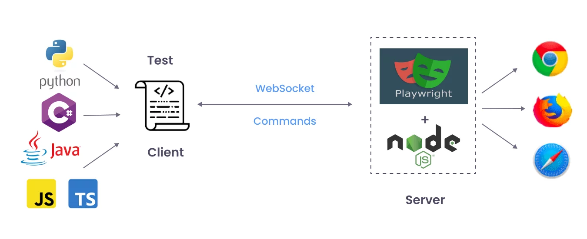
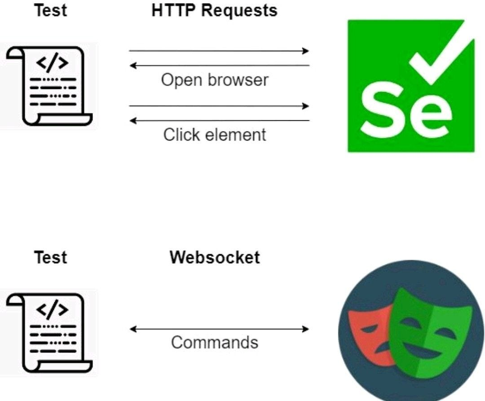
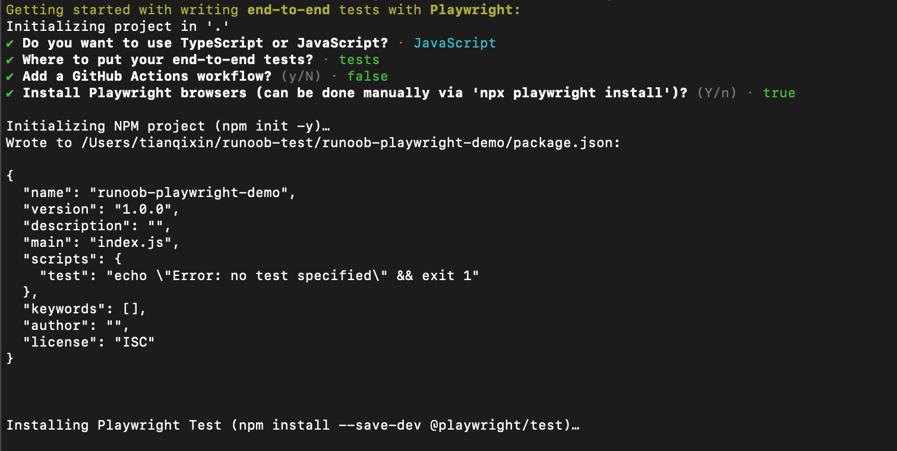
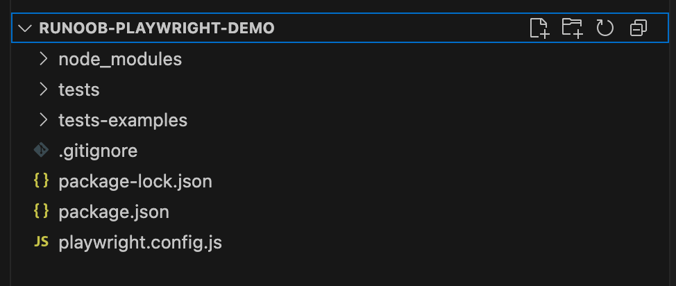
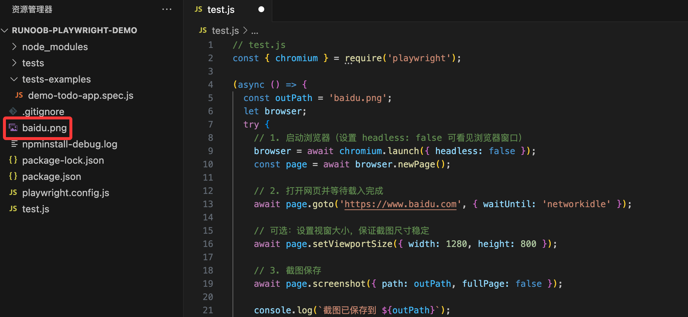
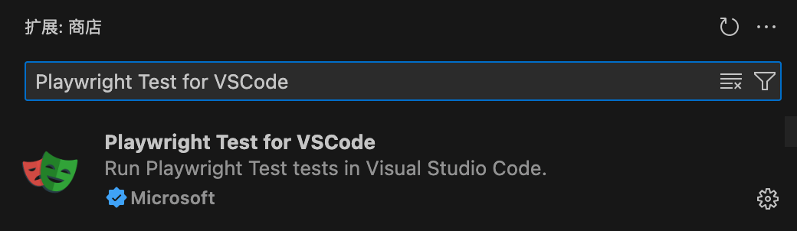
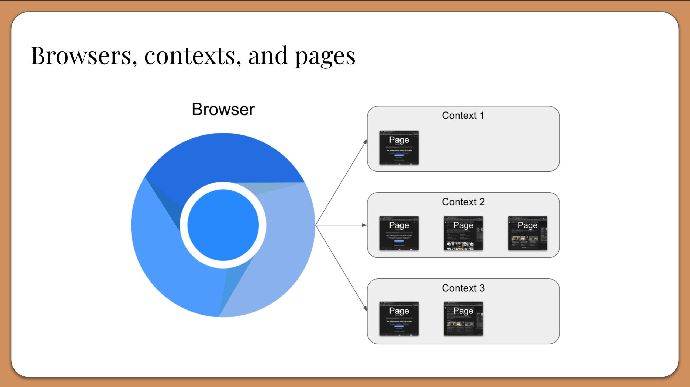

Playwright 是微软（Microsoft） 在 2020 年推出的一个开源项目，用于 Web 自动化和端到端（End-to-End）测试的开源框架。
Playwright支持多种浏览器（Chromium、Firefox 和 WebKit）和多种编程语言（JavaScript/TypeScript、Python、Java 和 .NET），旨在提供可靠、快速且功能丰富的自动化测试解决方案。
学习 Playwright 前，掌握这几样就够了：
async/await；#id、.class）；用一句话总结：只要人能在浏览器里点的，Playwright 几乎都能自动化完成。
比如：
以下是一个 Playwright 的简单实例，可以截图百度的首页：
运行：
node hello.js
浏览器会自动输入两条待办事项，并保存截图。
Playwright 是由微软开发的一个开源 Web 自动化测试框架，用于在 Chromium、Firefox 和 WebKit 三大浏览器引擎中进行端到端测试。
简单来说，它就是一个可以帮你通过编程来控制浏览器的工具，我们可以把它想象成一个虚拟用户，它能像人一样在网页上进行各种操作，比如：点击按钮、填写表单、导航到不同的页面、截图和保存网页内容。

Playwright 是微软开源的现代浏览器自动化框架，用少量代码就能在 Chromium（Chrome/Edge）、Firefox、WebKit（Safari 引擎）里自动完成人类的浏览器操作：打开网页、点击、输入、拖拽、上传文件、截图/PDF、录制日志与回放，最常见的用途是 端到端（E2E）测试，也可做轻量爬取与流程自动化。
Playwright 提供 JS/TS、Python、Java、.NET 多语言 SDK，其中 JS/TS + Playwright Test 是最主流组合。
| 浏览器 | 渲染引擎 | 平台支持 |
|---|---|---|
| Chromium | Blink（与 Chrome 同） | Windows / macOS / Linux |
| Firefox | Gecko | Windows / macOS / Linux |
| WebKit | WebKit（与 Safari 同） | Windows / macOS / Linux |
Playwright 使用的是官方浏览器的测试版本（Chromium 而非 Google Chrome，WebKit 而非 Safari），但行为与官方版本高度一致。
Playwright 不仅仅用于测试，它的强大功能使其在多个领域都大有作为：
用一句话总结：只要人能在浏览器里点的，Playwright 几乎都能自动化完成。
具体能力包括：
举个例子：
你要测试一个"登录"功能。
| 对比维度 | Playwright | Puppeteer |
|---|---|---|
| 浏览器支持 | Chromium + Firefox + WebKit | 仅 Chromium / Firefox（有限） |
| 测试运行器 | 内置完整的 Test Runner | 无内置，需配合 Jest/Mocha |
| 自动等待 | 全面内置 | 需手动处理 |
| 测试隔离 | Browser Context 原生支持 | 需自己管理 |
| 移动端模拟 | 完整的设备模拟 | 基本的设备模拟 |
| 维护方 | 微软 |
Puppeteer 适合简单的浏览器自动化脚本。
Playwright 在功能完备性和测试体验上全面超越，是测试场景的首选。
| 对比维度 | Playwright | Cypress |
|---|---|---|
| 架构 | 进程外执行，完全控制浏览器 | 运行在浏览器内部（沙箱受限） |
| 多标签/多窗口 | 完全支持 | 不支持 |
| 多浏览器 | Chromium + Firefox + WebKit | 仅 Chromium 系 + 实验性 Firefox/WebKit |
| iframe 支持 | 原生支持 | 受限 |
| 并行执行 | 原生支持，无需额外配置 | 需付费 Dashboard |
| 网络拦截 | 完整的请求/响应拦截和修改 | 只能 Stub 或 Spy |
| 执行速度 | 一般更快 | 一般较慢（浏览器内执行开销） |
Cypress 的开发者体验优秀，调试界面友好。
如果你需要多浏览器支持、多标签页操作，或者大型测试套件的并行执行，Playwright 更适合。
提到浏览器自动化，很多人第一时间想到的是 Selenium。那 Playwright 和它相比，有啥不同？
| 特点 | Selenium | Playwright |
|---|---|---|
| 诞生时间 | 2004 年，历史悠久 | 2020 年，后起之秀 |
| 浏览器支持 | Chrome, Firefox, Safari, IE 等 | Chromium, Firefox, WebKit（现代浏览器全覆盖） |
| API 设计 | 早期接口多，稍显复杂 | API 简洁现代，学习成本低 |
| 执行速度 | 较慢，常遇到等待问题 | 更快，更少超时 |
| 特殊功能 | 较强大，生态成熟 | 原生支持截图、录制视频、Mock 网络请求 |
一句话对比：

Playwright 不光能用来做测试，还能用在很多场景：
page.click()、page.fill() 就能完成网页操作。总结一句话：
Playwright = 一个会自动帮你打开网页、点按钮、填表单、截屏的"智能机器人"，既能用来做测试，也能当爬虫，还能做自动化小工具。
对于初学者来说，Playwright 有几个非常吸引人的特点：
sleep 或 wait 函数。这让你的代码更简洁、更稳定。@playwright/test。这个框架自带了断言库、测试报告生成器以及并行执行等高级功能，让编写和管理测试用例变得非常方便。Playwright 最核心的优势在于它的跨浏览器支持。 它可以同时控制 Chromium（Google Chrome 和 Microsoft Edge）、Firefox 和 WebKit（Safari 的引擎）这三种主流浏览器。这意味着你只需要编写一套代码，就可以在所有这些浏览器上运行你的自动化脚本，大大减少了重复工作。
Playwright 是唯一一个同时支持 Chromium、Firefox 和 WebKit 三大浏览器引擎的测试框架。
每个浏览器都有专门维护的驱动层（Chromium 使用 CDP，Firefox 使用 Juggler 协议，WebKit 使用 Playwright 自定义协议），确保底层操作的稳定性和一致性。
Playwright 在执行每个操作前，会自动等待元素变为可操作状态（附加到 DOM、可见、稳定、可接收事件、已启用）。
断言也会自动重试，直到条件满足或超时。
这从根本上解决了传统测试中最常见的 不稳定测试（flaky tests） 问题。
Playwright 引入了 Browser Context 的概念，每个测试运行在独立的浏览器上下文（相当于一个全新的浏览器配置文件）中。
每个 context 拥有独立的 localStorage、sessionStorage、cookies，测试之间不会相互影响。
创建 context 的开销极低（毫秒级），远快于每次启动新的浏览器实例。
Playwright 提供了 JavaScript/TypeScript、Python、Java、.NET 四种语言的 API，所有语言共享相同的设计理念和功能。
| 语言 | 安装命令 | 适用场景 |
|---|---|---|
| JavaScript / TypeScript | npm init playwright@latest | 前端团队、Node.js 项目 |
| Python | pip install playwright | Python 生态、AI/ML 项目 |
| Java | Maven/Gradle 依赖 | 企业级 Java 项目 |
| .NET | NuGet 包 | 微软技术栈 |
Playwright 不是一个单一的工具，而是一个包含多个组件的平台：
| 产品 | 用途 | 安装方式 |
|---|---|---|
| Playwright Test | 完整的端到端测试框架 | npm init playwright@latest |
| Playwright Library | 浏览器自动化脚本库 | npm i playwright |
| Playwright MCP | AI Agent 浏览器控制（MCP 协议） | npx @playwright/mcp@latest |
| Playwright CLI | Coding Agent 命令行工具 | npm i -g @playwright/cli@latest |
| VS Code 扩展 | 编辑器内测试调试与录制 | VS Code Marketplace |
Playwright 是一个 Node.js 库，所以需要我们本地安装 Node.js，如果你已经安装了可以跳过。
Playwright 官方推荐使用 Node.js。
验证是否安装成功：
node -v npm -v
能看到版本号即可。
更多安装可以参考：https://www.runoob.com/nodejs/nodejs-install-setup.html
如果成功安装 node，我们就可以开始 Playwright 的安装与使用。
在命令行执行：
mkdir runoob-playwright-demo cd runoob-playwright-demo
执行：
npm init playwright@latest
安装过程会提示：

安装完成后，你的项目目录大概长这样：
playwright-demo/ ├─ tests/ # 示例测试用例 ├─ playwright.config.js # 配置文件 ├─ package.json └─ node_modules/

yarn create playwright
pnpm create playwright
三种包管理器的初始化效果完全相同，选择你熟悉的一个即可。
如果你已有项目，想手动添加 Playwright，可以分两步完成。
# 安装 Playwright Test 作为开发依赖 npm i -D @playwright/test # 如果只需要浏览器自动化库（不用测试运行器） npm i playwright
# 安装所有浏览器（Chromium、Firefox、WebKit） npx playwright install # 或者只安装特定浏览器 npx playwright install chromium npx playwright install firefox npx playwright install webkit
浏览器二进制文件默认下载到操作系统缓存目录（如 macOS 的 ~/Library/Caches/ms-playwright/），不会占用你的项目空间。
Playwright 安装的是浏览器的测试版本，而非你日常使用的浏览器：
| Playwright 中的名称 | 对应浏览器 | 说明 |
|---|---|---|
| Chromium | Google Chrome 的开源基础 | Chrome 的核心引擎，行为几乎一致 |
| Firefox | Mozilla Firefox | 官方 Firefox 的测试构建版本 |
| WebKit | Apple Safari 的引擎 | Safari 的底层渲染引擎 |
这些测试版本与用户日常使用的浏览器存在微小差异，但在绝大多数测试场景中表现一致。
安装完成后，运行以下命令验证是否成功：
# 查看已安装的 Playwright 版本和浏览器 npx playwright --version
预期输出大致如下：
Version 1.52.0
运行示例测试来验证一切正常：
npx playwright test
如果看到测试运行的输出（包括通过和失败的测试），说明安装成功。
浏览器二进制文件较大（约 400-500 MB），下载速度取决于网络环境。
可以通过设置环境变量使用国内镜像：
# 设置下载源为国内镜像 export PLAYWRIGHT_DOWNLOAD_HOST=https://npmmirror.com/mirrors/playwright/ npx playwright install
在 Linux 上运行 Playwright 需要安装额外的系统库。
# 安装 Playwright 所需的系统依赖 npx playwright install-deps # 如果只需要某个浏览器对应的依赖 npx playwright install-deps chromium
在 Docker 容器中使用 Playwright 时，请使用微软官方 Docker 镜像（mcr.microsoft.com/playwright），它已预装所有依赖。
新建一个 test.js 文件，写入以下内容：
运行：
node test.js
以上是一个 Playwright 的简单实例，可以截图百度的首页。

成功初始化 Playwright 项目后，你的项目目录中会生成一系列文件和文件夹，本章详细解读每个部分的用途。
运行 npm init playwright@latest 后，项目目录中会生成以下结构：
your-project/ ├── playwright.config.ts # Playwright 配置文件 ├── package.json # 项目依赖与脚本 ├── package-lock.json # 依赖锁定文件 ├── tests/ # 测试文件目录 │ └── example.spec.ts # 示例测试文件 ├── tests-examples/ # 更多示例测试（可选） │ └── demo-todo-app.spec.ts ├── .github/ # GitHub Actions 配置（可选） │ └── workflows/ │ └── playwright.yml └── node_modules/ # npm 依赖包
这是 Playwright 的核心配置文件，控制测试运行的所有方面。
playwright.config.ts 是控制 Playwright 行为的核心入口，第 15 篇会对每个配置项做详细说明。
初始化后，package.json 中会新增 Playwright 相关的内容：
你也可以添加更多自定义脚本：
tests/ 目录是默认的测试文件存放位置（由 testDir 配置指定）。
初始化的示例测试文件内容如下：
测试文件命名建议：使用 .spec.ts（TypeScript）或 .spec.js（JavaScript）后缀。
如果你在初始化时选择了包含示例测试，tests-examples/ 目录中会有一个更完整的测试示例：
demo-todo-app.spec.ts 演示了真实 Todo 应用的完整测试场景，包括添加任务、完成状态切换、过滤功能等。
这是一个很好的学习参考，你可以运行来看看效果：
npx playwright test tests-examples/
如果你在初始化时选择了添加 GitHub Actions，.github/workflows/playwright.yml 文件会被自动生成。
这个工作流会在每次推送代码或创建 PR 时自动运行 Playwright 测试。
Playwright 安装的浏览器二进制文件不在项目目录中，而是存放在操作系统缓存目录：
| 操作系统 | 浏览器存放路径 |
|---|---|
| macOS | ~/Library/Caches/ms-playwright/ |
| Windows | %USERPROFILE%\AppData\Local\ms-playwright\ |
| Linux | ~/.cache/ms-playwright/ |
你也可以设置自定义存放路径：
# 设置浏览器安装路径 export PLAYWRIGHT_BROWSERS_PATH=/your/custom/path npx playwright install
Playwright 的核心依赖 @playwright/test 安装在 node_modules/ 中。
依赖内部包含了 Playwright 的完整运行时，包括与浏览器通信的协议层。
除了通过 npm 安装的 Node.js 包外，Playwright 还依赖浏览器二进制文件（存放在系统缓存中），两者缺一不可。
Playwright 开发推荐用 VS Code，因为它对 JavaScript/TypeScript、调试器、扩展支持都很强大。
Chinese (Simplified)）。VS Code 相关内容参考：https://www.runoob.com/vscode/vscode-tutorial.html
在 VS Code 的扩展（Extensions）面板里，搜索并安装以下插件：
Playwright Test for VSCode
ms-playwright.playwright
JavaScript / TypeScript 支持（VS Code 自带，通常不用额外装）
推荐（可选）：
如果还没初始化过项目，先执行：
npm init playwright@lates
VS Code 插件会自动识别项目里的 playwright.config.ts/js，并启用测试视图。
打开 VS Code 设置（快捷键 Ctrl+, 或 Cmd+,），确认以下配置：
保存时自动格式化
搜索 format on save → 勾选 Editor: Format On Save
终端默认 shell（根据自己系统选择）
Windows 推荐 PowerShell 或 Git Bash
macOS/Linux 默认即可
在 VS Code 左侧点击 运行与调试 → 创建配置，选择 Node.js，生成 .vscode/launch.json，添加 Playwright 调试配置，例如：
{
"version": "0.2.0",
"configurations": [
{
"name": "Debug Playwright Test",
"type": "node",
"request": "launch",
"program": "${workspaceFolder}/node_modules/.bin/playwright",
"args": ["test", "--project=chromium", "--headed"],
"console": "integratedTerminal",
"internalConsoleOptions": "neverOpen"
}
]
}
这样就可以在 VS Code 里按 F5 启动调试，Playwright 会跑在有界面模式，方便观察。
安装好 Playwright Test for VSCode 插件后，左侧会出现一个"Playwright"图标：
在 VS Code 的终端运行：
npx playwright test # 运行全部测试 npx playwright test login.spec.js # 运行指定文件 npx playwright codegen # 启动录制工具（自动生成脚本） npx playwright show-report # 打开测试报告
安装扩展后，VS Code 左侧会出现 Testing 图标（实验室烧杯图标）。
点击进入 Testing Sidebar，可以看到所有测试文件列表。
在这里你可以：
describe 和 testVS Code 扩展让你可以像调试普通代码一样调试 Playwright 测试：
在代码行号左侧点击即可添加红色断点。
右键点击断点旁边，选择 Debug Test，测试会在断点处暂停。
Live Debugging 是 VS Code 扩展的独特功能。
启用 Show Browser 选项运行测试时，点击代码中的 Locator，浏览器窗口中会高亮显示对应的页面元素。
如果 Locator 匹配了多个元素，Playwright 会同时高亮所有匹配项。
你可以直接在代码中编辑 Locator，浏览器会实时显示修改后的匹配结果。
点击 Testing Sidebar 底部的 Pick Locator 按钮。
在弹出的浏览器中点击目标元素，VS Code 的 Pick Locator 框中会显示最佳定位器。
按 Enter 复制到剪贴板，粘贴到测试代码中即可。
Playwright 会自动选择最稳定、最语义化的定位方式（优先 role > text > testid）。
在 Testing Sidebar 点击 Record new 按钮。
Playwright 会打开浏览器窗口，你在其中的所有操作（导航、点击、输入）都会被录制下来。
还可以通过工具栏生成断言：
录制完成后关闭浏览器，代码会自动生成在 test-1.spec.ts 文件中。
在已有测试代码中将光标放在想要插入操作的位置，点击 Record at cursor。
Playwright 会在浏览器中录制后续操作，并将生成的代码插入到光标所在位置。
这个功能非常适合在已有测试中补充步骤。
在编写代码之前，理解 Playwright 的核心概念至关重要，最核心的三个对象是 Browser、BrowserContext 和 Page，这三个对象构成了你与网页交互的基础：
Browser（浏览器）：这是自动化过程的起点。一个 Browser 实例代表了一个实际的浏览器，例如 Chromium、Firefox 或 WebKit。你可以启动一个浏览器，然后在其内部创建多个独立的会话。
BrowserContext（浏览器上下文）：一个 BrowserContext 就像一个独立的浏览器会话。它完全隔离了页面、本地存储、cookies 等数据。这使得你可以在一个浏览器中同时运行多个互不影响的自动化任务，就像你在隐身模式下打开了多个标签页一样。
Page（页面）：Page 是你进行实际操作的地方。它代表了浏览器上下文中的一个标签页或窗口。所有的操作，如点击、输入、导航、截图等，都是在 Page 对象上执行的。

三者之间的关系：
一个 Browser 可以包含多个 BrowserContext，而一个 BrowserContext 可以包含多个 Page。通常，我们只需要一个 Browser 和一个 BrowserContext，但在某些需要隔离数据的场景下，BrowserContext 就显得非常有用。
接下来我们将编写一个简单的脚本，它会启动浏览器，访问百度，然后截取一张图片。
创建一个名为 baidu_script.js 的文件，并粘贴以下代码：
代码详解：
const { chromium } = require('playwright');：从 Playwright 库中导入 chromium 模块。你可以根据需要替换为 firefox 或 webkit。await chromium.launch({ headless: false });：启动一个 Chromium 浏览器实例。headless: false 是一个关键选项，它会显示浏览器窗口，让你能看到脚本的执行过程。await browser.newContext(); 和 await context.newPage();：这三行代码组合起来，就是打开了一个新的浏览器标签页。await page.goto('https://www.baidu.com');：导航到指定的 URL。这是最常用的方法之一。await page.screenshot({ path: 'baidu_homepage.png' });：截取当前页面的截图，并将其保存到文件中。await browser.close();：关闭浏览器，释放系统资源。打开终端或命令提示符，进入你的项目目录，然后执行以下命令：
node baidu_script.js
执行后，你会看到一个浏览器窗口自动打开，加载百度首页，然后窗口关闭。在你的项目文件夹中，会生成一个名为 baidu_homepage.png 的截图文件。
在编写更复杂的脚本时，你可能需要调试。
Playwright 提供了一个强大的调试工具，我们只需在运行脚本时，在命令行前添加 PWDEBUG=1：
PWDEBUG=1 node baidu_script.js
运行后，你会看到一个 Playwright 调试窗口，可以逐步执行代码，检查页面元素，并实时看到脚本的每一步操作，这对于定位问题非常有帮助。
除了命令行输出和截图文件，你还可以通过以下方式检查脚本的运行结果：
console.log() 语句，可以打印变量的值或确认某个步骤是否执行。page.screenshot() 功能，在关键步骤保存截图，可以直观地看到页面的状态。本章带领你编写并运行第一个 Playwright 测试，理解测试的基本组成和执行流程。
初始化项目后，先运行一下自动生成的示例测试，确认一切正常：
# 运行所有测试 npx playwright test
运行后你会看到类似以下的输出：
Running 6 tests using 4 workers ✓ 1 [chromium] › tests/example.spec.ts:3:1 › has title (2.1s) ✓ 2 [chromium] › tests/example.spec.ts:10:1 › get started link (1.8s) ✓ 3 [firefox] › tests/example.spec.ts:3:1 › has title (1.9s) ✓ 4 [firefox] › tests/example.spec.ts:10:1 › get started link (1.7s) ✓ 5 [webkit] › tests/example.spec.ts:3:1 › has title (2.3s) ✓ 6 [webkit] › tests/example.spec.ts:10:1 › get started link (2.0s) 6 passed (12s)
从输出中可以看到：测试在 3 个浏览器上各运行了 2 个测试，共 6 个测试全部通过。
清空 tests/example.spec.ts 的内容，我们来从头写一个测试。
运行这个测试：
npx playwright test tests/first-test.spec.ts
预期输出：
Running 1 test using 1 worker ✓ 1 [chromium] › tests/first-test.spec.ts:4:1 › 访问 RUNOOB 首页并检查标题 (2.5s) 1 passed (2.5s)
test() 是 Playwright Test 的核心函数，用于定义一个测试用例。
| 参数 | 类型 | 说明 |
|---|---|---|
| 第一个参数（测试名称） | string | 测试的描述性名称，会显示在测试报告和日志中 |
| 第二个参数（测试函数） | async (fixtures) => {} | 异步函数，包含测试的实际逻辑 |
{ page } 是测试函数参数中的解构赋值，它从 Playwright 提供的 fixtures 对象中提取 page。
page 是一个 Page 对象，代表了一个浏览器标签页。
每个测试都拥有自己独立的 page 实例：
| fixture | 类型 | 说明 |
|---|---|---|
page | Page 对象 | 独立的浏览器标签页，用于导航、操作、断言 |
context | BrowserContext 对象 | 浏览器上下文，管理 Cookie、Storage 等 |
browser | Browser 对象 | 浏览器实例，较少直接使用 |
request | APIRequestContext 对象 | 用于发送 HTTP 请求（不通过浏览器） |
最常用的是 page，绝大多数操作都通过它完成。
page.goto(url) 是 Playwright 中最基础的操作之一，用来导航到指定 URL。
waitUntil 选项有三个可选值：
| 值 | 含义 | 适用场景 |
|---|---|---|
'load' | 等待 load 事件触发 | 默认值，适用于大多数页面 |
'domcontentloaded' | 等待 DOMContentLoaded 事件 | 页面基本结构加载完成即可 |
'networkidle' | 等待网络空闲（500ms 内无新请求） | 需要等待异步数据全部加载完毕 |
在绝大多数情况下使用默认的
'load'即可，Playwright 的自动等待机制会处理后续的元素可用性问题，无需使用'networkidle'。
expect() 是 Playwright 的断言方法，用来验证测试结果是否符合预期。
Playwright 的断言有一个关键特性：自动重试。
如果断言条件暂时不满足，Playwright 会不断重试，直到条件满足或超时。
这意味着你不需要写 waitFor 或 sleep 来等待页面就绪。
Playwright 的所有操作都是异步的，因此测试函数必须声明为 async。
所有浏览器操作（goto、click、fill 等）和断言（expect）都必须使用 await 关键字。
如果忘记写
await，测试可能会在不正确的时机断言，导致测试不稳定或意外通过。务必在每次调用 Playwright API 时加上await。
我们再看一个稍带断言失败的测试，以理解测试输出：
运行后，输出大致如下：
Running 1 test using 1 worker
✘ 1 [chromium] › tests/fail-demo.spec.ts:4:1 › 一个故意失败的测试 (5.2s)
1 failed
tests/fail-demo.spec.ts:4:1 › 一个故意失败的测试
同时会自动打开 HTML 报告，显示详细的失败信息和错误截图。
本章节我们来了解下 Playwright 如何与网页进行实际交互及最常用的页面操作 API。
页面导航是最常见的操作，Playwright 提供了多个 API 来打开、刷新和控制页面的跳转。
page.goto）await page.goto('https://example.com');
常用参数：
url：要访问的地址timeout：超时时间，默认 30 秒waitUntil：等待页面加载的条件
'load'：等待 load 事件（页面和资源全部加载完）'domcontentloaded'：等待 DOM 内容加载完'networkidle'：等待网络空闲page.reload）刷新当前页面。
await page.reload({ waitUntil: 'networkidle' });
page.goBack / page.goForward）模拟浏览器的前进、后退按钮。
await page.goto('https://example.com');
await page.goto('https://playwright.dev');
await page.goBack(); // 返回 example.com
await page.goForward(); // 前进到 playwright.dev
有时需要显式等待页面加载某个元素，Playwright 提供了智能等待机制。
await page.waitForLoadState('networkidle'); // 等待网络空闲
await page.waitForSelector('#main-content'); // 等待元素出现
要与页面交互，首先要定位到目标元素。Playwright 提供了多种选择器。
最常用的定位方式，和前端开发一致。
await page.click('#login-button'); // 通过 id
await page.click('.btn-primary'); // 通过 class
await page.click('form > button'); // 通过层级关系
通过 XPath 表达式定位元素。
await page.click('//button[text()="登录"]');
await page.click('//input[@name="username"]');
XPath 更灵活，但可读性较差，不推荐作为首选。
通过元素的可见文本进行定位。
await page.click('text=登录');
await page.click('button:has-text("提交")');
直接使用属性来选择。
await page.fill('input[name="email"]', 'test@example.com');
await page.click('[data-test="submit-button"]');
data-testid、data-test 属性）page.getByRole、page.getByText 等可读性更好的方法（Playwright 5.x 推荐）Playwright 支持多种与元素交互的方式，涵盖点击、输入、键盘和鼠标操作。
page.click）await page.click('#submit');
可选参数：
button：'left' | 'right' | 'middle'（默认左键）clickCount：点击次数（双击时设为 2）modifiers：键盘组合键（如 ['Control']）fill vs type）fill(selector, value)：清空输入框并输入新值（推荐，大多数情况使用）type(selector, text)：模拟逐字输入（带延迟，更贴近真实用户）press：模拟按键keyboard.type：连续输入文本keyboard.press：按下某个键（可带组合键）Playwright 提供了完整的鼠标控制：
hover：鼠标悬停mouse.move(x, y)：移动到坐标mouse.click(x, y)：点击坐标mouse.down / mouse.up：按下/释放鼠标键dragAndDrop：拖拽元素（Playwright 1.18+）下面是一个完整的 Playwright 脚本，演示了导航、定位、输入、点击等基本操作。
运行方式：
| 分类 | 方法 / 属性 | 说明 |
|---|---|---|
| 页面导航 | page.goto(url[, options]) |
打开页面 |
page.reload([options]) |
刷新页面 | |
page.goBack([options]) |
后退 | |
page.goForward([options]) |
前进 | |
page.waitForLoadState([state]) |
等待页面加载状态 | |
| 元素定位 | page.locator(selector) |
通用定位器 |
page.getByRole(role, options) |
根据角色定位 | |
page.getByText(text) |
根据文本定位 | |
page.getByPlaceholder(text) |
根据 placeholder 定位 | |
page.getByLabel(text) |
根据 label 定位 | |
| 基础交互 | page.click(selector[, options]) |
点击元素 |
page.dblclick(selector) |
双击 | |
page.fill(selector, value) |
输入文本（清空后填入） | |
page.type(selector, text[, options]) |
模拟逐字输入 | |
page.press(selector, key) |
在元素上按键 | |
page.keyboard.type(text) |
键盘输入 | |
page.keyboard.press(key) |
键盘按键（含组合键） | |
page.hover(selector) |
悬停 | |
page.mouse.move(x, y) |
移动鼠标 | |
page.mouse.click(x, y[, options]) |
坐标点击 | |
page.dragAndDrop(src, dest) |
拖拽元素 |
本章节我们将介绍 Playwright 高级页面操作，这部分会更贴近真实测试需求，覆盖 等待机制、表单处理、弹窗对话框 等高级功能。
Playwright 最大的优势之一就是 智能等待（auto-waiting）：大部分操作（如 click, fill）会自动等待元素可见且可操作。但在复杂场景中，仍需要手动控制等待。
Playwright 内置的等待机制：
显式调用等待方法，例如等待某个选择器、文本或请求。
常见 state 值：
'attached' → 元素出现在 DOM 中'visible' → 元素在页面可见'hidden' → 元素隐藏'detached' → 元素被移除// 等待元素出现
await page.waitForSelector('#loading', { state: 'visible' });
// 等待元素消失
await page.waitForSelector('#loading', { state: 'hidden' });
等待某个请求完成，常用于 AJAX 请求或 API 调用。
// 等待指定 URL 的请求完成
await page.waitForResponse(response =>
response.url().includes('/api/login') && response.status() === 200
);
通过 page.waitForFunction 执行自定义等待逻辑。
// 等待页面上计数器达到 10
await page.waitForFunction(() => {
return document.querySelector('#count').innerText === '10';
});
表单是测试中最常见的交互场景。Playwright 提供了丰富的 API 来操作表单控件。
await page.fill('#username', 'admin'); // 清空并输入
await page.type('#search', 'Playwright', { delay: 100 }); // 模拟逐字输入
// 通过 value
await page.selectOption('#country', 'china');
// 通过标签文本
await page.selectOption('#country', { label: 'United States' });
// 通过 index
await page.selectOption('#country', { index: 2 });
// 勾选复选框
await page.check('#agree');
// 取消勾选
await page.uncheck('#subscribe');
// 点击单选框
await page.check('input[type="radio"][value="male"]');
// 直接上传文件
await page.setInputFiles('#upload', 'example.png');
// 上传多个文件
await page.setInputFiles('#upload', ['a.png', 'b.png']);
// 清空文件
await page.setInputFiles('#upload', []);
提交表单有两种方式：
await page.click('button[type="submit"]');
// 或者
await page.press('#form input[name="email"]', 'Enter');
Playwright 可以捕获并处理 浏览器原生弹窗（alert, confirm, prompt），以及自定义模态框。
page.once('dialog', async dialog => {
console.log(dialog.message()); // 打印弹窗内容
await dialog.accept(); // 点击 "确定"
});
await page.click('#show-alert');
page.once('dialog', async dialog => {
console.log(dialog.message());
await dialog.dismiss(); // 点击 "取消"
});
await page.click('#show-confirm');
page.once('dialog', async dialog => {
console.log(dialog.message());
await dialog.accept('Playwright'); // 输入内容并确认
});
await page.click('#show-prompt');
自定义模态框（如 Bootstrap / Ant Design）其实就是普通 DOM 元素，可以直接用 定位 + 交互 的方式关闭或输入。
await page.click('#open-modal');
await page.fill('.modal input[name="name"]', 'Test User');
await page.click('.modal button.confirm');
下面的示例会综合使用 等待机制、表单操作、文件上传、对话框处理。
运行后效果：
以下整理了 页面导航、等待、表单、交互、弹窗 的常用 API：
| 分类 | 方法 / 属性 | 说明 |
|---|---|---|
| 页面导航 | page.goto(url[, options]) |
打开页面 |
page.reload([options]) |
刷新页面 | |
page.goBack([options]) |
后退 | |
page.goForward([options]) |
前进 | |
page.waitForLoadState([state, options]) |
等待加载完成 | |
| 等待机制 | page.waitForSelector(selector[, options]) |
等待元素出现/消失 |
page.waitForResponse(fn[, options]) |
等待指定请求响应 | |
page.waitForFunction(pageFn[, arg, options]) |
自定义等待条件 | |
| 元素定位 | page.locator(selector) |
通用定位器 |
page.getByRole(role, options) |
根据角色定位 | |
page.getByText(text) |
根据文本定位 | |
page.getByPlaceholder(text) |
输入框 placeholder | |
page.getByLabel(text) |
表单 label | |
| 表单操作 | page.fill(selector, value) |
输入框（清空后填入） |
page.type(selector, text[, options]) |
模拟逐字输入 | |
page.press(selector, key) |
在元素上按键 | |
page.selectOption(selector, values) |
下拉菜单选择 | |
page.check(selector[, options]) |
勾选复选框/单选框 | |
page.uncheck(selector[, options]) |
取消勾选 | |
page.setInputFiles(selector, files) |
文件上传 | |
| 基础交互 | page.click(selector[, options]) |
点击元素 |
page.dblclick(selector[, options]) |
双击 | |
page.hover(selector[, options]) |
悬停 | |
page.mouse.move(x, y) |
鼠标移动 | |
page.mouse.click(x, y[, options]) |
鼠标点击 | |
page.dragAndDrop(src, dest[, options]) |
拖拽元素 | |
| 弹窗处理 | page.on('dialog', handler) |
监听对话框事件 |
dialog.message() |
获取弹窗文本 | |
dialog.accept([promptText]) |
确认（可输入内容） | |
dialog.dismiss() |
取消 | |
| 截图与断言 | page.screenshot({ path }) |
截图保存 |
page.textContent(selector) |
获取文本内容 | |
expect(locator).toHaveText(text) |
断言文本（需用 @playwright/test） |
数据提取和验证是自动化测试的关键，主要包括 获取页面数据、断言验证、截图和录制，不仅能验证功能是否正确，还能辅助调试和回归测试。
在测试中经常需要读取页面信息进行验证，Playwright 提供了丰富的 API。
const value = await page.getAttribute('#username', 'placeholder');
console.log(value); // "请输入用户名"
// 获取元素的 style 属性
const color = await page.$eval('#btn', el => getComputedStyle(el).color);
console.log(color);
await page.isVisible('#dialog'); // 是否可见
await page.isHidden('#loading'); // 是否隐藏
await page.isEnabled('#submit'); // 是否可用
await page.isDisabled('#submit'); // 是否禁用
await page.isChecked('#agree'); // 复选框是否选中
Playwright 提供了 内置断言库（@playwright/test），便于编写测试用例。
在 @playwright/test 中，使用 expect 进行断言。
await expect(page.locator('#message')).toHaveText('登录成功');
await expect(page.locator('#username')).toHaveValue('testuser');
await expect(page.locator('#submit')).toBeEnabled();
await expect(page.locator('#agree')).toBeChecked();
await expect(page.locator('#loading')).toBeHidden();
await expect(page).toHaveTitle(/Playwright/);
await expect(page).toHaveURL('https://playwright.dev/');
截图与录制在调试、失败用例分析和回归测试中非常有用。
await page.screenshot({ path: 'screenshot.png', fullPage: true });
path: 保存路径fullPage: 是否截取整个页面const element = page.locator('#logo');
await element.screenshot({ path: 'logo.png' });
在创建 context 时启用录制：
const context = await browser.newContext({
recordVideo: { dir: 'videos/' }
});
const page = await context.newPage();
await page.goto('https://example.com');
await context.close(); // 关闭后保存视频
Playwright 支持快照对比，常用于回归测试。
import { test, expect } from '@playwright/test';
test('页面快照测试', async ({ page }) => {
await page.goto('https://playwright.dev');
expect(await page.screenshot()).toMatchSnapshot('homepage.png');
});
会将截图与基准图像 homepage.png 对比，检测 UI 变化。
好的 ✅ 那我来为 第六章：数据提取和验证 补充一个 完整实战案例，并整理出 API 对照表。这样你就能既有实战，又能快速查表。
这个案例涵盖了：信息提取 + 断言验证 + 页面截图。
这个测试会验证：
下面是 数据提取与验证相关 API 一览表。
| 方法 | 说明 | 示例 |
|---|---|---|
page.textContent(selector) |
获取元素文本内容 | await page.textContent('#msg') |
page.innerText(selector) |
获取渲染后的纯文本 | await page.innerText('#msg') |
page.innerHTML(selector) |
获取元素 HTML | await page.innerHTML('#content') |
page.getAttribute(selector, name) |
获取属性值 | await page.getAttribute('#btn', 'class') |
page.$eval(selector, fn) |
在元素上执行函数 | await page.$eval('#logo', el => el.tagName) |
page.$$eval(selector, fn) |
批量执行函数 | await page.$$eval('.item', els => els.length) |
page.isVisible(selector) |
是否可见 | await page.isVisible('#dialog') |
page.isHidden(selector) |
是否隐藏 | await page.isHidden('#loading') |
page.isEnabled(selector) |
是否启用 | await page.isEnabled('#submit') |
page.isDisabled(selector) |
是否禁用 | await page.isDisabled('#submit') |
page.isChecked(selector) |
是否选中 | await page.isChecked('#agree') |
| 方法 | 说明 | 示例 |
|---|---|---|
expect(locator).toHaveText(value) |
验证文本 | expect(page.locator('h1')).toHaveText('欢迎') |
expect(locator).toHaveValue(value) |
验证输入框值 | expect(page.locator('#user')).toHaveValue('test') |
expect(locator).toHaveAttribute(name, value) |
验证属性 | expect(page.locator('#btn')).toHaveAttribute('type', 'submit') |
expect(locator).toBeVisible() |
元素可见 | expect(page.locator('#msg')).toBeVisible() |
expect(locator).toBeHidden() |
元素隐藏 | expect(page.locator('#loading')).toBeHidden() |
expect(locator).toBeEnabled() |
元素启用 | expect(page.locator('#submit')).toBeEnabled() |
expect(locator).toBeDisabled() |
元素禁用 | expect(page.locator('#submit')).toBeDisabled() |
expect(locator).toBeChecked() |
元素已选中 | expect(page.locator('#agree')).toBeChecked() |
expect(page).toHaveTitle(title) |
页面标题验证 | expect(page).toHaveTitle(/Dashboard/) |
expect(page).toHaveURL(url) |
页面 URL 验证 | expect(page).toHaveURL('https://example.com/dashboard') |
| 方法 | 说明 | 示例 |
|---|---|---|
page.screenshot(options) |
页面截图 | await page.screenshot({ path: 'page.png' }) |
locator.screenshot(options) |
元素截图 | await page.locator('#logo').screenshot({ path: 'logo.png' }) |
context = browser.newContext({ recordVideo }) |
开启视频录制 | recordVideo: { dir: 'videos/' } |
expect(await page.screenshot()).toMatchSnapshot(name) |
截图对比（快照测试） | expect(await page.screenshot()).toMatchSnapshot('home.png') |
Playwright 除了作为浏览器自动化工具，还自带了一个 完整的测试框架 —— Playwright Test。
Playwright Test 可以帮助我们组织测试用例、生成报告、并行执行、失败重试，功能完备，开箱即用。
expect 断言。test 默认在新的浏览器上下文中执行，互不干扰。安装方式：
npm init playwright@latest
自动生成项目结构，包含配置文件 playwright.config.js。
Playwright Test 使用 playwright.config.js（或 .ts）作为配置入口。
// playwright.config.js
import { defineConfig } from '@playwright/test';
export default defineConfig({
testDir: './tests', // 测试目录
timeout: 30 * 1000, // 单个测试超时时间
retries: 2, // 失败重试次数
reporter: [['html'], ['list']], // 测试报告类型
use: {
headless: true, // 是否无头模式
screenshot: 'only-on-failure', // 失败时截图
video: 'retain-on-failure', // 失败时保留视频
baseURL: 'https://example.com', // 基础 URL
},
projects: [
{ name: 'Chromium', use: { browserName: 'chromium' } },
{ name: 'Firefox', use: { browserName: 'firefox' } },
{ name: 'WebKit', use: { browserName: 'webkit' } },
],
});
Playwright Test 脚本通常包含：
1、导入测试库
import { test, expect } from '@playwright/test';
2、编写测试用例
test('示例测试', async ({ page }) => {
await page.goto('https://example.com');
await expect(page).toHaveTitle('Example Domain');
});
3、分组与钩子
describe 组织测试beforeEach / afterEach 做前后置处理test() 函数使用test('页面标题验证', async ({ page }) => {
await page.goto('https://playwright.dev');
await expect(page).toHaveTitle(/Playwright/);
});
describe() 分组test.describe('用户登录模块', () => {
test('输入正确账号密码', async ({ page }) => {
// 登录逻辑...
});
test('输入错误密码', async ({ page }) => {
// 验证错误提示...
});
});
test.describe('购物车模块', () => {
test.beforeEach(async ({ page }) => {
await page.goto('https://example.com/cart');
});
test.afterEach(async ({ page }) => {
await page.screenshot({ path: 'cart.png' });
});
test('添加商品', async ({ page }) => {
await page.click('#add-item');
await expect(page.locator('#cart-count')).toHaveText('1');
});
});
支持参数化测试：
const users = [
{ name: 'admin', password: '123456' },
{ name: 'guest', password: 'guest' },
];
for (const user of users) {
test(`用户 ${user.name} 登录`, async ({ page }) => {
await page.goto('https://example.com/login');
await page.fill('#username', user.name);
await page.fill('#password', user.password);
await page.click('#submit');
await expect(page.locator('.welcome')).toBeVisible();
});
}
npx playwright test # 运行全部测试 npx playwright test login.spec.js # 运行单个文件 npx playwright test -g "登录" # 运行指定用例
Playwright 默认 按文件并行执行，也可在配置文件中指定 workers 数量：
npx playwright test --workers=4
运行后生成 HTML 报告：
npx playwright show-report
在配置文件 playwright.config.js 中设置：
retries: 2
测试失败时会自动重试，适合处理偶发性错误。
playwright-demo/ ├─ playwright.config.ts # 全局配置（多项目、多浏览器、报告、重试…） ├─ package.json ├─ tests/ │ ├─ auth.setup.ts # 一次性登录，生成 storageState │ ├─ smoke/ │ │ └─ home.spec.ts # 冒烟用例：标题/URL/截图对比 │ └─ e2e/ │ └─ cart.spec.ts # 端到端：添加购物车、断言、附件、步骤 ├─ fixtures/ │ ├─ pages.ts # 页面对象（PO） │ └─ test.extend.ts # 自定义 fixtures └─ snapshots/ # 视觉基线（自动生成）
要点：projects 让同一套用例在不同浏览器/配置下运行；use 可在全局/项目/测试三级覆盖；报告与重试在配置中统一管理。
fixtures/test.extend.ts（自定义 fixture + 公共步骤封装）
基于 test.extend() 增加自定义 fixture，便于在任意用例中直接注入 home、cart 实例。
fixtures/pages.ts（页面对象）
tests/auth.setup.ts（仅在 "setup" 项目里执行）
tests/smoke/home.spec.ts
视觉对比建议使用 toHaveScreenshot（优先于用 page.screenshot() + toMatchSnapshot 的手写方式）。
tests/e2e/cart.spec.ts
用 test.step 分层记录步骤、用 test.info().attach()把调试数据/截图附加到报告，便于排查；并行模式可用 describe.configure({ mode: 'parallel' })。
常用命令：
npx playwright test # 运行全部 npx playwright test tests/e2e # 运行目录 npx playwright test -g "Cart" # 按标题过滤 npx playwright test --project="Chromium" # 指定项目 npx playwright show-report # 打开HTML报告 npx playwright test --update-snapshots # 更新视觉基线 npx playwright test --debug # 调试模式（Inspector）
CLI 过滤、项目选择、报告查看与快照更新等见官方 CLI/报告/快照文档。
| API | 作用 |
|---|---|
test(name, fn) |
定义测试 |
test.describe(title, fn) |
分组 |
test.describe.configure({ mode }) |
parallel / serial |
test.beforeAll/afterAll |
组级前后置 |
test.beforeEach/afterEach |
用例前后置 |
test.skip/only/fixme/slow/fail |
标记/控制用例 |
| API | 作用 |
|---|---|
test.extend<Fixtures>(defs) |
扩展自定义 fixtures |
test.use(options) |
测试级覆盖 use 选项（如 storageState、viewport、locale 等） |
defineConfig({...}) |
配置文件入口（testDir、retries、workers、reporter…） |
projects |
多项目/多浏览器/不同配置运行 |
use: { baseURL, trace, video, screenshot, viewport, locale, timezoneId, storageState } |
运行时环境与采集策略 |
fixtures / use / 配置项与 projects 详见官方 "Fixtures / Use options / Configuration / Projects" 文档。(Playwright)
| API | 作用 | |
|---|---|---|
expect(value).toBe / toEqual / toContain ... |
通用断言 | |
expect(locator).toHaveText/Value/Attribute |
Web 特有断言（带智能等待） | |
expect(locator).toBeVisible/Hidden/Enabled/Disabled/Checked |
状态断言 | |
expect(page).toHaveTitle/URL |
页面断言 | |
| `expect(page/locator).toHaveScreenshot([name | options])` | 视觉快照对比（推荐） |
断言与视觉快照的推荐做法详见 Assertions 与 Snapshots 文档。(Playwright)
| API | 作用 | |
|---|---|---|
test.step(name, fn) |
将测试分解为步骤（报告可视化） | |
| `test.info().attach(name, { path | body, contentType })` | 给测试或步骤附加文件/数据（报告中展示） |
附件也可作用于步骤级（参见 TestStep / TestStepInfo）。(Playwright)
| 命令/配置 | 作用 |
|---|---|
reporter: [['html', { outputFolder }], ['list']] |
报告配置 |
npx playwright test --project="Chromium" |
选择项目运行 |
-g "keyword" / --grep / --grep-invert |
过滤用例 |
--update-snapshots |
更新视觉基线 |
npx playwright show-report |
打开报告 |
完整 CLI 与 Reporter 选项见官方文档。(Playwright)
Playwright 的网络拦截 (Network Interception) 是自动化测试和爬虫场景中非常有用的能力，可以让我们拦截、修改、模拟网络请求与响应。
Playwright 提供了 page.route() 和 page.on('request') / page.on('response') 等 API，可以：
常见应用场景：
await page.route('**/api/todos', async route => {
// 拦截匹配的请求
console.log('拦截到请求:', route.request().url());
// 1. 直接放行（继续请求）
await route.continue();
// 2. 修改请求
// await route.continue({ headers: { ...route.request().headers(), 'X-Test': 'true' } });
// 3. 返回 mock 响应
// await route.fulfill({
// status: 200,
// contentType: 'application/json',
// body: JSON.stringify([{ id: 1, text: 'mock todo', done: false }]),
// });
// 4. 拒绝请求
// await route.abort();
});
参数说明：
page.route(url, handler)：注册一个拦截器，url 支持字符串、正则或 ** 通配。route.request()：获取请求对象。route.continue([options])：放行请求，可以修改方法、headers、postData。route.fulfill(response)：直接返回伪造的响应。route.abort([errorCode])：中断请求，常见错误码如 "failed", "aborted", "timedout"。
// 监听所有请求
page.on('request', req => {
console.log(`➡️ 请求: ${req.method()} ${req.url()}`);
});
// 监听所有响应
page.on('response', async res => {
console.log(`⬅️ 响应: ${res.status()} ${res.url()}`);
});
// 获取响应 body
const response = await page.waitForResponse('**/api/data');
console.log('响应内容:', await response.text());
常用方法：
request.url() / request.method() / request.headers() / request.postData()response.status() / response.headers() / response.text() / response.json()| API | 用途 | 常见参数/说明 |
|---|---|---|
page.route(url, handler) |
注册请求拦截 | url 可为字符串/正则/通配符 |
route.request() |
获取请求对象 | 返回 Request |
route.continue([options]) |
放行请求，可修改 | { method, headers, postData } |
route.fulfill(response) |
返回自定义响应 | { status, headers, body, contentType } |
route.abort([errorCode]) |
中断请求 | 常见：'failed', 'aborted', 'timedout' |
page.unroute(url, handler?) |
移除拦截规则 | |
page.on('request', cb) |
监听请求 | |
page.on('response', cb) |
监听响应 | |
request.url()/method()/headers()/postData() |
请求信息 | |
response.status()/headers()/text()/json() |
响应信息 | |
page.waitForResponse(urlOrPredicate) |
等待特定响应 | 可传 URL 或函数 |
虽然 Playwright 主要是做浏览器自动化的，但它在文件上传和下载方面也很强大，可以轻松应对前端常见的文件交互场景。
在 Web 表单中，文件上传通常通过 <input type="file"> 完成。Playwright 提供了专门的 API 来处理：
await page.setInputFiles('input[type="file"]', 'tests/fixtures/avatar.png');
参数说明：
[]，表示清空已选择的文件。
const upload = page.locator('input[type=file]');
await upload.setInputFiles(['tests/fixtures/1.png', 'tests/fixtures/2.png']);
const fileChooserPromise = page.waitForEvent('filechooser');
await page.click('button#upload'); // 触发选择文件
const fileChooser = await fileChooserPromise;
await fileChooser.setFiles('tests/fixtures/test.pdf');
Playwright 可以捕获浏览器下载事件，并获取文件保存路径。
Playwright 本身也会生成文件（截图、视频、trace 等）：
await page.screenshot({ path: 'screenshots/home.png', fullPage: true });
await page.video()?.saveAs('videos/test.mp4'); // 在配置中开启 video 记录才可用
| API | 用途 | 参数/说明 |
|---|---|---|
page.setInputFiles(selector, files) |
上传文件 | files 可为路径字符串、数组或 FilePayload |
locator.setInputFiles(files) |
上传文件（Locator 方式） | |
page.waitForEvent('filechooser') |
等待文件选择对话框 | 返回 FileChooser |
fileChooser.setFiles(files) |
设置选择的文件 | |
page.waitForEvent('download') |
监听下载事件 | 返回 Download |
download.saveAs(path) |
保存下载文件 | 自定义存储位置 |
download.path() |
获取系统默认存储路径 | |
download.url() |
获取下载请求的 URL | |
download.suggestedFilename() |
获取推荐文件名 | |
page.screenshot({ path }) |
页面截图 | |
locator.screenshot({ path }) |
元素截图 | |
page.video()?.saveAs(path) |
保存录制视频 | 需配置开启 video |
Playwright 移动端测试，主要包括模拟移动设备、地理位置、权限控制等功能。
Playwright 除了能模拟桌面浏览器，还支持 移动端设备测试，包括：
这让我们能在 PC 上测试出接近真实手机的效果。
Playwright 提供了一些常见的设备配置（基于 Chrome DevTools 设备描述），可以通过 devices 调用。
Playwright 在移动设备模式下会启用 触摸事件。
1、轻点
await page.tap('button#submit');
2、滑动/拖动
await page.touchscreen.tap(200, 300); // 点击指定坐标 await page.touchscreen.swipe(200, 300, 200, 800); // 自定义封装，模拟滑动
3、长按
await page.touchscreen.down(200, 300); await page.waitForTimeout(1000); // 按住 1 秒 await page.touchscreen.up();
可以模拟手机的 GPS 定位。
Playwright 支持授予或拒绝常见权限，例如：
geolocation（地理位置）camera（摄像头）microphone（麦克风）notifications（通知）const context = await browser.newContext({
permissions: ['geolocation', 'notifications']
});
通过修改 viewport 配置实现。
await context.newPage({
viewport: { width: 812, height: 375 }, // 横屏
isMobile: true
});
| API | 说明 | 示例 |
|---|---|---|
devices['iPhone 12'] |
获取设备配置 | const iphone = devices['iPhone 12'] |
context = browser.newContext({...device}) |
启用设备模拟 | ...iPhone |
page.tap(selector) |
触摸点击元素 | await page.tap('#btn') |
page.touchscreen.tap(x,y) |
在坐标点点击 | await page.touchscreen.tap(100,200) |
page.touchscreen.down(x,y) |
手指按下 | await page.touchscreen.down(100,200) |
page.touchscreen.up() |
手指抬起 | await page.touchscreen.up() |
geolocation |
设置定位 | { longitude: 120, latitude: 30 } |
permissions |
设置权限 | ['geolocation','camera'] |
viewport |
设置屏幕宽高 | { width: 812, height: 375 } |
isMobile |
启用移动模式 | isMobile: true |
Playwright 内置常见设备清单，包含 iPhone 系列、Pixel 系列、iPad 等。
Playwright 内置了几十种常用设备配置（基于 Chrome DevTools 数据）。使用时通过：
const { devices } = require('playwright');
const iphone = devices['iPhone 12'];
即可获得该设备的配置参数。
| 设备名称 | viewport | deviceScaleFactor | UA (简写) | 备注 |
|---|---|---|---|---|
iPhone SE |
375 × 667 | 2 | Safari iOS | 小屏经典款 |
iPhone 6 |
375 × 667 | 2 | Safari iOS | 旧款 |
iPhone 7 |
375 × 667 | 2 | Safari iOS | 旧款 |
iPhone 8 |
375 × 667 | 2 | Safari iOS | 常用 |
iPhone 8 Plus |
414 × 736 | 3 | Safari iOS | 大屏 |
iPhone X |
375 × 812 | 3 | Safari iOS | 刘海屏 |
iPhone 11 |
414 × 896 | 2 | Safari iOS | 常用 |
iPhone 11 Pro |
375 × 812 | 3 | Safari iOS | |
iPhone 11 Pro Max |
414 × 896 | 3 | Safari iOS | |
iPhone 12 |
390 × 844 | 3 | Safari iOS | 热门 |
iPhone 12 Pro |
390 × 844 | 3 | Safari iOS | |
iPhone 12 Pro Max |
428 × 926 | 3 | Safari iOS | 大屏 |
iPhone 12 Mini |
360 × 780 | 3 | Safari iOS | 小屏 |
iPhone 13 |
390 × 844 | 3 | Safari iOS | 热门 |
iPhone 13 Pro |
390 × 844 | 3 | Safari iOS | |
iPhone 13 Pro Max |
428 × 926 | 3 | Safari iOS | |
iPhone 13 Mini |
360 × 780 | 3 | Safari iOS |
| 设备名称 | viewport | deviceScaleFactor | UA (简写) | 备注 |
|---|---|---|---|---|
Pixel 2 |
411 × 731 | 2.6 | Chrome Android | 旧款 |
Pixel 2 XL |
411 × 823 | 3.5 | Chrome Android | 大屏 |
Pixel 3 |
393 × 786 | 2.75 | Chrome Android | |
Pixel 3 XL |
412 × 847 | 3.5 | Chrome Android | |
Pixel 4 |
353 × 745 | 2.75 | Chrome Android | |
Pixel 4 XL |
412 × 869 | 3.5 | Chrome Android | |
Pixel 5 |
393 × 851 | 2.75 | Chrome Android | 推荐 |
| 设备名称 | viewport | deviceScaleFactor | UA (简写) | 备注 |
|---|---|---|---|---|
iPad (gen 6) |
768 × 1024 | 2 | Safari iOS | 常用 |
iPad (gen 7) |
810 × 1080 | 2 | Safari iOS | |
iPad Air |
820 × 1180 | 2 | Safari iOS | |
iPad Mini |
768 × 1024 | 2 | Safari iOS | |
iPad Pro 11 |
834 × 1194 | 2 | Safari iOS | |
iPad Pro 12.9 |
1024 × 1366 | 2 | Safari iOS | 大屏 |
| 设备名称 | viewport | deviceScaleFactor | UA (简写) | 备注 |
|---|---|---|---|---|
Galaxy S5 |
360 × 640 | 3 | Chrome Android | 较老 |
Galaxy S8 |
360 × 740 | 4 | Chrome Android | |
Galaxy S9+ |
412 × 846 | 4.5 | Chrome Android | |
Galaxy Note 3 |
360 × 640 | 3 | Chrome Android | |
Galaxy Note 9 |
414 × 846 | 4.5 | Chrome Android | |
Galaxy A51/71 |
412 × 914 | 2.63 | Chrome Android | 热门 |
本章介绍 Playwright 测试的组织方式，包括测试分组、执行控制以及生命周期钩子的用法。
test.describe() 用于将相关的测试组织在一起，形成逻辑分组。
测试报告会按照 describe 分组显示，方便查看结果。
test.describe() 可以嵌套，形成树状结构：
test.skip() 用于跳过某个测试，被跳过的测试不会执行。
test.fail() 用于标记一个已知会失败的测试。
test.fail()的作用是反向标记：测试失败=符合预期，测试通过=异常（可能需要移除标记）。
test.only() 用于在开发调试时只运行特定测试，忽略文件中的其他测试。
test.only()是调试工具，不应提交到代码仓库。如果你在playwright.config.ts中设置了forbidOnly: true，CI 上会检测到only并让构建失败。
test.fixme() 与 test.skip() 类似，但语义上表示"这个测试需要修复"。
test.slow() 将测试的超时时间增加 3 倍。
钩子函数让你在测试的不同阶段执行准备和清理工作。
beforeEach 在每个测试前执行，afterEach 在每个测试后执行。
beforeAll 在当前作用域所有测试之前执行一次，afterAll 在所有测试之后执行一次。
beforeAll和afterAll不能访问pagefixture，因为 page 是每个测试独立的。如果需要操作页面，请使用beforeEach。
钩子的作用域取决于它们所在的位置：
执行顺序：外层钩子先执行，内层钩子后执行。
对于 A1 和 A2：先输出 "文件级 beforeEach"，再输出 "分组 A 的 beforeEach"。
对于 B1：只输出 "文件级 beforeEach"。
Locator（定位器）是 Playwright 中最核心的概念之一，它代表了一种在页面上查找元素的方式。
本章介绍 Playwright 推荐的定位方法：通过角色、文本、标签和占位符来定位元素。
Locator 是 Playwright 用来在页面上查找元素的抽象对象。
与传统的 document.querySelector() 不同，Playwright 的 Locator 具有自动等待和自动重试能力。
当页面内容动态变化时，Locator 会不断重新查找元素，直到找到匹配的元素或超时。
创建 Locator 时，Playwright 只记录了一个查找规则。
当你调用 .click()、.fill() 等操作或 expect(locator) 断言时，Locator 才真正开始查找元素。
如果找不到元素，Locator 会持续重试，直到操作超时为止。
getByRole() 是 Playwright 最推荐的定位方式。
它通过元素的可访问性角色（ARIA Role）来查找元素，这是最接近用户感知的方式。
| Role | 对应 HTML 元素 | 使用示例 |
|---|---|---|
'button' | <button>、role="button" | getByRole('button', { name: '登录' }) |
'link' | <a> | getByRole('link', { name: '了解更多' }) |
'heading' | <h1>~<h6> | getByRole('heading', { name: 'RUNOOB 教程' }) |
'textbox' | <input type="text">、<textarea> | getByRole('textbox', { name: '用户名' }) |
'checkbox' | <input type="checkbox"> | getByRole('checkbox', { name: '记住我' }) |
'radio' | <input type="radio"> | getByRole('radio', { name: '男' }) |
'combobox' | <select> | getByRole('combobox', { name: '城市' }) |
'img' | <img> | getByRole('img', { name: 'Logo' }) |
'list' | <ul>、<ol> | getByRole('list') |
'listitem' | <li> | getByRole('listitem') |
'navigation' | <nav> | getByRole('navigation') |
'table' | <table> | getByRole('table') |
name 选项是通过元素的可访问名称来缩小范围。
可访问名称的来源包括：元素文本内容、aria-label 属性、关联的 <label> 等。
除了 name，getByRole 还支持多种状态选项：
getByText() 通过元素的文本内容来定位。
getByText 匹配的是元素的完整文本内容，所以 getByText('RUNOOB', { exact: true }) 只会匹配文本内容刚好为 "RUNOOB" 的元素。
默认不做精确匹配时，子字符串匹配即可（如 getByText('RUNOOB') 会匹配 "欢迎访问 RUNOOB"）。
getByLabel() 用于定位与 <label> 关联的表单控件。
它也支持 { exact: true } 精确匹配选项。
getByPlaceholder() 通过 placeholder 属性定位输入框。
| 方法 | 适用场景 | 优先级 |
|---|---|---|
getByLabel() | 有 <label> 元素时 | 优先使用 |
getByPlaceholder() | 没有 label，但有 placeholder 时 | 次选 |
getByRole 是 Playwright 最推荐的定位方式，因为它模拟用户通过角色识别元素的方式。其次是 getByLabel 和 getByPlaceholder。在没有语义化元素的情况下才考虑使用 getByTestId 或 CSS 选择器。
getByAltText() 通过图片的 alt 属性来定位 <img> 元素。
getByTitle() 通过元素的 title 属性来定位。
getByAltText和getByTitle使用频率较低，仅在元素具有明确的 alt 或 title 属性且无法用其他方式定位时才使用。
getByTestId() 是兜底方案，通过 data-testid 属性来定位元素。
如果你的项目不使用 data-testid，可以在 playwright.config.ts 中自定义属性名：
page.locator() 支持 CSS 选择器和 XPath，是更灵活的备用方案。
CSS 选择器和 XPath 是最后的选择，优先使用
getByRole、getByText等语义化定位方法。CSS 选择器容易因样式重构而失效，XPath 可读性差且性能较慢。
Playwright 的 Locator 支持链式调用，可以在当前匹配结果上进一步筛选。
按照推荐程度从高到低排列：
| 优先级 | 方法 | 使用条件 |
|---|---|---|
| 1（最推荐） | getByRole() | 元素具有明确的 ARIA 角色 |
| 2 | getByLabel() | 表单元素有关联的 label |
| 3 | getByPlaceholder() | 输入框有 placeholder |
| 4 | getByText() | 元素有明确的文本内容 |
| 5 | getByAltText() | 图片有 alt 属性 |
| 6 | getByTitle() | 元素有 title 属性 |
| 7（兜底） | getByTestId() | 无法用以上方式定位时 |
| 8（最后选择） | locator() | CSS 选择器 / XPath |
本章全面介绍 Playwright 的断言体系，包括自动重试断言、通用断言以及软断言的用法。
断言（Assertion）用来验证测试的预期结果是否与实际结果一致。
Playwright 提供了两套断言：通用断言（来自 Jest）和自动重试断言（Playwright 独有）。
Playwright 的 Web 特定断言会自动重试，直到条件满足或超时，必须使用 await。
用于非 Web 特定的值比较，不自动重试。
| 类型 | 是否自动重试 | 是否需要 await | 适用场景 |
|---|---|---|---|
| 自动重试断言 | 是 | 必须 await | 页面元素、URL、标题等 Web 特定内容 |
| 通用断言 | 否 | 不需要 | 普通变量、数组、对象等 JavaScript 值 |
| 方法 | 说明 | 示例 |
|---|---|---|
toBe(value) | 严格相等（===） | expect(x).toBe(42) |
toEqual(value) | 深度相等 | expect(obj).toEqual({ a: 1 }) |
toContain(item) | 数组/字符串包含 | expect(arr).toContain('a') |
toBeTruthy() | 值是真值 | expect(x).toBeTruthy() |
toBeFalsy() | 值是假值 | expect(x).toBeFalsy() |
toBeNull() | 值为 null | expect(x).toBeNull() |
toBeGreaterThan(n) | 大于 n | expect(x).toBeGreaterThan(10) |
toBeLessThan(n) | 小于 n | expect(x).toBeLessThan(100) |
toHaveLength(n) | 数组长度 | expect(arr).toHaveLength(3) |
普通断言失败后会立即终止测试。
软断言失败后不会终止，会继续执行后续代码，在测试结束时统一报告所有失败。
在测试表单页面时使用
expect.soft()可以一次性发现所有缺失的字段，而不需要逐个修复后才看到下一个问题。这能大幅提高调试效率。
自动重试断言默认超时 5 秒，可在配置文件或单次断言中自定义：
本章介绍 Playwright 中与导航和点击相关的操作，以及操作背后的自动等待机制。
Action（操作）是 Playwright 中用来模拟用户行为的方法，比如点击按钮、输入文字、选择下拉框。
每个 Action 在执行之前，Playwright 会自动等待目标元素变为可操作状态。
在执行每个操作前，Playwright 会对目标元素进行一系列检查：
| 步骤 | 检查条件 | 说明 |
|---|---|---|
| 1. Attached | 元素已挂载到 DOM 树 | 元素存在于页面中 |
| 2. Visible | 元素可见（非 display:none 或 visibility:hidden） | 用户能看见元素 |
| 3. Stable | 元素位置稳定（动画结束） | 避免动画期间的误操作 |
| 4. Receives Events | 元素没有被其他元素遮挡 | 确保点击能被元素接收 |
| 5. Enabled | 元素未被禁用（非 disabled） | 用户可以与之交互 |
任意一步未通过，Playwright 都会等待并重试，直到超时。
这 5 步检查是 Playwright 自动完成的，你不需要写任何额外的等待代码。这也是 Playwright 能够大幅减少不稳定测试的根本原因。
有时你需要绕过可操作性检查，例如点击一个被遮罩隐藏的按钮或测试不可见元素的状态。
force: true是测试真实用户做不到的操作，绝大多数情况下不应使用。如果你的测试需要force: true，先检查是否有交互设计问题。
| 操作 | 适用场景 |
|---|---|
click() | 按钮点击、链接跳转、复选框切换 |
dblclick() | 编辑模式进入、双击选择文本 |
click({ button: 'right' }) | 打开浏览器原生上下文菜单 |
hover() | 触发悬停菜单、Tooltip 提示 |
click({ position }) | Canvas 操作、自定义图形交互 |
fill() 会先清空输入框，再填入新值，是输入操作中最常用和最推荐的方法。
type() 会逐个字符输入，模拟真实的键盘敲击，每次按键之间可设置间隔。
| 方法 | 行为 | 适用场景 |
|---|---|---|
fill() | 清空后一次性填入 | 绝大多数场景（推荐） |
type() | 逐字符输入，触发每次按键事件 | 需要触发输入联想、实时搜索 |
大部分情况下使用
fill()即可。只有当输入框有实时搜索（keydown/keyup 事件）时，才需要使用type()。
| 键名 | 对应按键 |
|---|---|
Enter | 回车 |
Escape | Esc 退出 |
Tab | Tab 切换焦点 |
Backspace | 退格删除 |
Delete | 删除键 |
ArrowUp/Down/Left/Right | 方向键 |
PageUp/PageDown | 翻页键 |
Home/End | 行首/行尾 |
Control/Alt/Shift/Meta | 修饰键 |
| 方式 | 适用场景 |
|---|---|
locator.click() | 点击页面元素（绝大多数场景） |
page.mouse.click() | 点击特定坐标（Canvas、图表等无 DOM 的场景） |
文件路径是相对于当前工作目录（项目根目录）的路径。
本章深入介绍 Playwright 的自动等待机制，以及手动等待和超时配置的完整知识。
现代 Web 应用大量使用异步渲染，页面内容不会瞬间全部加载完毕。
传统测试框架中，开发者不得不写 sleep 或 waitFor 来等待，但这些操作不够灵活，要么等待太久拖慢测试，要么等待不够导致 flaky。
Playwright 将等待逻辑内置到每个 Locator 和 Action 中，从根本上解决这个问题。
当你创建 Locator 时，Playwright 不立即查找元素，而是在你执行操作或断言时才开始查找并自动等待。
在执行操作（click、fill 等）前，Playwright 确保元素：Attached → Visible → Stable → Receives Events → Enabled。
断言失败后不会立即报错，而是持续重试直到条件满足或超时。
在自动等待不够用的特殊场景下，Playwright 也提供了手动等待方法。
尽量避免使用
waitForTimeout，固定等待在设备性能差异下极不稳定。优先使用后文的waitForURL、waitForResponse等事件驱动等待。
Playwright 有 4 种超时类型，分别作用于不同层面：
| 超时类型 | 配置文件位置 | 默认值 | 作用对象 |
|---|---|---|---|
| Test timeout | timeout | 30000ms | 整个测试用例 |
| Expect timeout | expect.timeout | 5000ms | 断言重试 |
| Action timeout | use.actionTimeout | 无（不限） | 元素操作（click、fill 等） |
| Navigation timeout | use.navigationTimeout | 无（不限） | 页面导航（goto、goBack 等） |
单次设置 > 配置文件全局设置 > 默认值。
| 场景 | 建议超时 | 说明 |
|---|---|---|
| 本地开发 | 默认值 | 本地服务响应快，默认值足够 |
| CI 环境 | 2~3 倍默认值 | CI 机器性能波动大 |
| 慢速页面 | actionTimeout: 15000 | 大表单、复杂页面 |
| 第三方服务调用 | test.setTimeout(120000) | 外部 API 响应慢 |
本章介绍 Playwright 的测试隔离机制和 Browser Context 的概念，这是保证测试稳定可靠的关键设计。
测试隔离是指每个测试用例运行在完全独立的环境中，互不影响。
在 Playwright 中，每个测试自动获得一个独立的Browser Context（浏览器上下文）。
Browser Context 相当于一个全新的浏览器配置文件。
创建一个 Context 就像打开一个全新的浏览器窗口，拥有自己的 Cookie、localStorage、sessionStorage，但开销极低（毫秒级）。
| 概念 | 类比 | 说明 |
|---|---|---|
| Browser（浏览器实例） | 打开了一个浏览器程序 | 开销大，一般整个测试运行只创建一次 |
| Browser Context（浏览器上下文） | 浏览器中的独立配置文件 | 开销小，每个测试一个 |
| Page（标签页） | 浏览器中的一个标签页 | 在 Context 中打开页面 |
每个测试中的 page 和 context 都是全新的，所以一个测试修改了 localStorage 或 Cookie，不会影响其他测试。
每个 Browser Context 之间完全隔离以下内容：
| 隔离项 | 说明 |
|---|---|
| Cookies | 每个 Context 有独立的 Cookie 存储 |
| localStorage | 本地存储完全隔离 |
| sessionStorage | 会话存储完全隔离 |
| IndexedDB | 浏览器数据库隔离 |
| 缓存（Cache） | HTTP 缓存隔离 |
除了 page，测试函数还可以访问 context fixture 来进行 Context 级别的操作。
当你需要在同一个测试中模拟多个独立的用户时，可以手动创建 Context。
每个测试从相同的初始状态开始，在任何顺序下运行结果一致。
测试 A 失败不会导致测试 B 也失败，每个测试都是独立可调试的。
因为测试完全独立，Playwright 可以安全地在多个 worker 中并行运行它们。
测试隔离是 Playwright 的默认行为，每个
test()自动获得独立的page和context，无需任何额外配置。
本章介绍如何在 Playwright 中处理认证，避免每个测试都重复登录，同时保持测试的隔离性。
大多数 Web 应用的测试都需要用户登录。
如果每个测试都从头执行登录流程，会显著拖慢测试速度。
Playwright 的解决方案是：认证一次，保存状态，所有测试复用。
.auth文件包含敏感 Cookie 和认证 Token，绝对不能提交到代码仓库。
这是 Playwright 推荐的认证方案，适用于所有测试共享同一个测试账号的场景。
如果不同测试需要使用不同账号，可以创建多个认证状态文件。
通过 UI 执行登录流程较慢，更高效的方式是直接调用登录 API。
API 认证比 UI 认证更快更可靠，推荐在实际项目中优先使用。
| 场景 | 推荐方案 |
|---|---|
| 所有测试用同一个测试账号 | Setup 项目 + storageState |
| 不同类型测试需要不同账号 | 多个 storageState + test.use |
| 每个测试需要独立账号 | 每个测试内 API 创建账号并登录 |
| 账号资源有限 | Setup 项目认证一次，全部复用 |
本章详细介绍 playwright.config.ts 中的各项配置，让你能够根据项目需求灵活调整测试行为。
playwright.config.ts 是 Playwright 的中央配置文件，所有测试运行参数都在此定义。
| 配置项 | 类型 | 默认值 | 说明 |
|---|---|---|---|
testDir | string | tests | 测试文件所在目录 |
fullyParallel | boolean | false | 是否完全并行运行所有测试（包括同一文件内的测试） |
workers | number | CPU 核心数/2 | 并行执行的 worker 数量 |
retries | number | 0 | 失败测试的重试次数 |
timeout | number | 30000 | 每个测试的总超时（毫秒） |
reporter | string/array | list | 测试报告器类型 |
forbidOnly | boolean | false | CI 上检测到 test.only() 则失败 |
testMatch | string/RegExp | *.spec.(ts\|js) | 测试文件的匹配模式 |
testIgnore | string/RegExp | - | 忽略的测试文件模式 |
use 中的配置会应用到所有测试和项目：
| 配置项 | 类型 | 说明 |
|---|---|---|
baseURL | string | 基础 URL，测试中可用相对路径（如 await page.goto('/login')） |
viewport | {width, height} | 浏览器视口大小，默认 { width: 1280, height: 720 } |
locale | string | 浏览器语言，如 'zh-CN'、'en-US' |
timezone | string | 时区，如 'Asia/Shanghai' |
colorScheme | string | 颜色方案：'light'｜'dark'｜'no-preference' |
geolocation | {latitude, longitude} | 模拟地理位置 |
permissions | string[] | 授予的浏览器权限（如 ['geolocation']） |
userAgent | string | 自定义 User-Agent 字符串 |
trace | string | Trace 收集策略：'on'｜'off'｜'on-first-retry' |
screenshot | string | 截图策略：'on'｜'off'｜'only-on-failure' |
video | string | 视频录制策略：'on'｜'off'｜'retain-on-failure' |
storageState | string | 认证状态文件路径 |
testIdAttribute | string | 自定义 testId 属性名，默认 'data-testid' |
actionTimeout | number | 每个操作（click、fill）的超时时间 |
navigationTimeout | number | 每次导航的超时时间 |
webServer 配置让 Playwright 在运行测试前自动启动你的开发服务器：
在所有测试运行之前/之后执行一次，适合数据库初始化等操作。
本章介绍如何通过 Projects 配置在多个浏览器和设备上运行测试，以及项目依赖的用法。
在 Playwright 中，一个 Project 代表一组在特定浏览器和设备配置下运行的测试。
通过配置多个 Project，你可以用同一套测试代码在 Chromium、Firefox、WebKit 以及移动端设备上运行。
运行特定浏览器的测试：
# 仅在 Chromium 上运行 npx playwright test --project=chromium # 在 Chromium 和 Firefox 上运行 npx playwright test --project=chromium --project=firefox
Playwright 内置了大量设备预设（来自 @playwright/test 的 devices），模拟真实设备的视口、User-Agent、像素比等。
常用的设备预设：
| 预设名称 | 设备类型 | 视口大小 |
|---|---|---|
Desktop Chrome | 桌面 | 1280×720 |
Desktop Firefox | 桌面 | 1280×720 |
Desktop Safari | 桌面 | 1280×720 |
iPhone 15 | 手机 | 393×852 |
Pixel 7 | 手机 | 412×915 |
iPad Pro | 平板 | 1024×1366 |
你可以在 Project 的 use 中覆盖全局配置：
一个项目可以依赖另一个项目，确保依赖的项目先运行。
最常见的用法是 Setup 项目（认证）先运行，其他项目依赖它。
setup 项目只会运行一次，所有依赖它的项目会等待它完成后才启动。
如果要让多个项目共享配置而不重复，可以提取一个基础项目：
本章全面介绍 Playwright 测试的运行方式、命令行参数以及各种筛选技巧。
# 运行单个测试文件 npx playwright test tests/login.spec.ts # 运行目录中的所有测试 npx playwright test tests/user/ # 运行多个文件（空格分隔） npx playwright test tests/login.spec.ts tests/register.spec.ts
# 运行文件名中包含 "login" 或 "user" 的所有测试 npx playwright test login user
# 运行测试名称中包含 "登录" 的测试 npx playwright test -g "登录" # 通过正则表达式筛选 npx playwright test -g "登录|注册"
# 只运行带 @smoke 标签的测试 npx playwright test --grep "@smoke" # 跳过带 @slow 标签的测试 npx playwright test --grep-invert "@slow"
# 只在 Chromium 上运行 npx playwright test --project=chromium # 在多个浏览器上运行 npx playwright test --project=chromium --project=firefox
# 显示浏览器窗口（默认无头） npx playwright test --headed
# 使用本地安装的 Chrome 而非 Playwright 的 Chromium npx playwright test --project=chromium \ --channel=chrome
# 在 UI 模式下运行（推荐开发和调试时使用） npx playwright test --ui
# 单步调试测试 npx playwright test --debug
# 使用 4 个 worker 并行运行 npx playwright test --workers=4 # 单线程运行（方便调试） npx playwright test --workers=1
# 每个测试重复运行 3 次（检查稳定性） npx playwright test --repeat-each=3
# 在 CI 上分片运行（分 4 片，当前为第 1 片） npx playwright test --shard=1/4 # 第 2 片 npx playwright test --shard=2/4
分片常用于 CI 中多台机器并行运行测试，每台机器只跑一部分，最终合并结果。
# 更新视觉回归的基准截图 npx playwright test --update-snapshots # 强制生成 Trace 文件（即使配置中没有开启） npx playwright test --trace on # 查看最后一次运行的 Trace npx playwright show-trace test-results/.../trace.zip
| 命令 | 作用 |
|---|---|
npx playwright test | 运行所有测试 |
npx playwright test file.spec.ts | 运行指定文件 |
npx playwright test -g "关键词" | 按测试名称筛选 |
npx playwright test --project=chromium | 指定浏览器 |
npx playwright test --headed | 有头模式（显示浏览器窗口） |
npx playwright test --ui | UI 模式 |
npx playwright test --debug | 调试模式 |
npx playwright test --workers=4 | 指定 worker 数量 |
npx playwright test --shard=1/4 | 分片运行 |
npx playwright test --repeat-each=3 | 重复运行 |
npx playwright test --update-snapshots | 更新视觉基准截图 |
npx playwright show-report | 查看 HTML 报告 |
npx playwright show-trace trace.zip | 查看 Trace |
npx playwright codegen url | 启动代码生成器 |
本章介绍 Playwright 的三大调试工具：UI Mode、Trace Viewer 和命令行 Debug 模式。
UI Mode 是 Playwright 内置的图形化测试界面，提供探索、运行和调试测试的一站式体验。
npx playwright test --ui
启动后，左侧边栏显示所有测试文件。
你可以展开每个文件和 describe 块，单独运行、查看、Watch 或调试每个测试。
点击 Watch 按钮后，Playwright 会监听文件变化，一旦测试代码或源代码更新，自动重新运行受影响的测试。
在测试执行后，顶部会显示时间轴视图，用不同颜色标记导航和操作。
你可以悬停查看每个步骤的快照，双击选中一个时间段，查看该时间段的详细日志。
在时间轴中点击某个步骤，右侧会显示该时刻的 DOM 快照。
你可以看到页面在操作前后的实际状态，快速定位问题。
UI Mode 支持多种过滤方式：
@tag过滤
Trace Viewer 是 Playwright 的记录回放工具，能让你像调试录制一样检查测试的每一步。
# 本地打开 npx playwright show-trace path/to/trace.zip
也可以上传到 trace.playwright.dev 在线查看。
| 内容 | 说明 |
|---|---|
| DOM 快照 | 每一步执行前后的完整页面 DOM 快照 |
| 网络请求 | 所有 HTTP 请求和响应（URL、状态码、Header、Body） |
| 控制台日志 | 浏览器控制台输出的所有消息 |
| 截图 | 每一步的页面截图 |
| 操作记录 | 所有 Playwright 操作的调用参数和执行时间 |
| 源代码 | 每个操作对应的测试源码位置 |
在 Trace Viewer 的时间线中找到失败步骤，查看该步骤前后页面的 DOM 状态和网络请求，定位失败原因。
Trace 是最强大的调试工具。当测试在 CI 上失败但你无法本地重现时，下载 CI 生成的 Trace 文件可以离线分析失败原因。
npx playwright test --debug
功能：
F10（Step Over）和
F11（Step Into）控制执行
使用 page.pause() 后运行测试，Playwright 会自动打开 Inspector 窗口，让你逐步骤检查页面状态。
| 方式 | 适用场景 |
|---|---|
| UI Mode | 日常开发，浏览测试列表，快速查看测试状态 |
| Trace Viewer | 定位 CI 失败、分析复杂测试的每一步 |
| --debug / page.pause() | 开发新测试，深入调试特定步骤 |
本章介绍 Playwright 的命令行测试生成器 Codegen，通过浏览器操作自动生成测试代码。
Codegen（Code Generator）是 Playwright 内置的交互式测试生成工具。
你像普通用户一样操作浏览器，Codegen 自动将你的操作转换为 Playwright 测试代码。
# 基本用法：打开一个 URL 并开始录制 npx playwright codegen https://www.runoob.com/ # 指定代码生成的语言（默认 TypeScript） npx playwright codegen --target=javascript https://www.runoob.com/ npx playwright codegen --target=python https://www.runoob.com/
启动后会打开两个窗口：
在浏览器窗口中进行任何操作，Codegen 都会自动生成对应的 Playwright 代码：
在地址栏输入新的 URL 并回车，会生成 page.goto() 语句。
点击任意元素（按钮、链接、菜单），会生成 page.getByRole(...).click() 或类似的定位+点击代码。
在输入框中输入文字，会生成 page.getByLabel(...).fill(...) 或 page.getByPlaceholder(...).fill(...)。
在下拉菜单中选择选项，会生成 page.getByLabel(...).selectOption(...)。
勾选或取消勾选复选框，会生成 page.getByLabel(...).check() 或 .uncheck()。
Codegen 会分析页面元素的属性，按以下优先级生成 Locator：
getByRole() —— 元素具有明确的 ARIA 角色getByText() —— 元素有明确文本内容getByLabel() —— 表单元素有 label 关联getByPlaceholder() —— 输入框有 placeholdergetByAltText() —— 图片有 alt 属性getByTestId() —— 元素有 data-testidgetByTitle() —— 元素有 title 属性locator() —— CSS 选择器（最后选择）如果 Codegen 找到多个匹配元素，它会自动优化 Locator，直到能唯一确定目标元素。
在 Inspector 窗口的工具栏中，可以点击断言按钮来生成断言代码：
await expect(locator).toBeVisible()await expect(locator).toHaveText(...)await expect(locator).toHaveValue(...)await expect(locator).toHaveScreenshot()| 选项 | 说明 |
|---|---|
--target=javascript | 生成 JavaScript 代码（默认为 TypeScript） |
--target=python | 生成 Python 代码 |
--target=java | 生成 Java 代码 |
--target=csharp | 生成 C# 代码 |
--save-storage=auth.json | 录制结束后保存认证状态 |
--load-storage=auth.json | 加载已有的认证状态后再录制 |
-o tests/test.spec.ts | 指定输出文件（默认输出到终端） |
--viewport-size=375,812 | 自定义视口大小（模拟移动端） |
--device="iPhone 15" | 使用设备预设 |
--color-scheme=dark | 指定颜色方案 |
| 方式 | 适用场景 |
|---|---|
| VS Code Record New | 日常测试开发，代码直接进入编辑器，可立即修改 |
| Codegen 命令行 | 快速原型，跨语言代码生成，不依赖 IDE |
本章介绍如何使用 Playwright 拦截、修改和模拟网络请求，实现不依赖后端 API 的独立测试。
网络拦截允许你在浏览器发起 HTTP 请求时进行干预。
你可以阻止请求、修改响应、返回模拟数据，让测试不依赖外部 API 或网络状态。
page.route(url, handler) 用于拦截匹配指定 URL 模式的所有网络请求。
URL 匹配模式支持以下格式：
| 模式 | 示例 | 说明 |
|---|---|---|
| 完整 URL | 'https://api.example.com/users' | 精确匹配 |
| Glob 通配符 | '**/api/**' | ** 匹配任意路径 |
| 正则表达式 | /\/api\/v\d\/users/ | 灵活匹配 |
| 函数 | url => url.includes('/api/') | 编程逻辑匹配 |
route.fulfill() 是最强大的 Mock 方法，可以返回任意自定义响应。
不是直接返回模拟数据，而是修改真实请求或响应后继续发送到服务器。
在 Mock 处理函数中，可以用 route.fetch() 实际发送请求并获取真实响应，然后修改。
| 方式 | 作用范围 | 适用场景 |
|---|---|---|
page.route() | 仅当前页面 | 单个页面的网络 Mock |
context.route() | 该 Context 下所有页面 | 多个页面共享的 Mock 规则 |
HAR（HTTP Archive）文件可以记录页面的所有网络请求，然后回放模拟。
# 录制 HAR 文件 npx playwright open --save-har=tests/hars/api-responses.har https://www.runoob.com/
HAR 文件适合 Mock 大量或复杂的 API 响应。先录制一次，之后测试都从 HAR 回放，不依赖真实服务器。
本章介绍如何监控浏览器网络流量，以及使用 Playwright 进行独立的 API 测试。
| 类型 | 对应方法 |
|---|---|
'log' | console.log() |
'error' | console.error() |
'warning' | console.warn() |
'info' | console.info() |
'debug' | console.debug() |
Playwright 的 request fixture 允许你不通过浏览器直接发送 HTTP 请求。
这非常适合在测试前后准备或清理服务端状态。
在实际项目中，常常在操作浏览器前后使用 API 进行状态管理。
API 测试比浏览器操作快得多，适合用于数据准备和清理。将 API 和浏览器操作结合使用，可以大大提高测试的效率和可靠性。
本章介绍如何使用 Playwright 进行截图和视频录制，帮助你在测试失败时快速定位问题。
在配置文件中设置自动截图策略，无需在每个测试中手动调用：
失败截图会保存在 test-results/ 目录中，并在 HTML 报告中显示。
| 场景 | 推荐方案 |
|---|---|
| CI 测试失败时快速了解页面状态 | screenshot: 'only-on-failure' |
| 查看完整的测试执行过程 | video: 'retain-on-failure' |
| 视觉回归测试 | expect(page).toHaveScreenshot() |
| 调试特定步骤 | 手动调用 page.screenshot() |
截图和视频会增加测试执行时间和磁盘占用。推荐仅在生产环境中使用
'only-on-failure'或'retain-on-failure'，避免每次都生成媒体文件。
本章介绍 Playwright 的视觉回归测试功能，通过截图对比检测 UI 的意外变化。
视觉回归测试（Visual Regression Testing）通过比较当前截图与基准截图（Golden File）之间的像素差异，检测页面的 UI 变化。
当某个 CSS 改动意外影响了其他页面的布局时，视觉回归测试能直接捕获这个问题。
第一次运行时，Playwright 会报错并生成基准截图：
Error: A snapshot doesn't exist at runoob-homepage-chromium-darwin.png, writing actual.
第二次运行时，会自动与基准截图对比。
首次运行截图断言时，Playwright 会自动生成 Golden File 并保存在测试文件旁边的 -snapshots 目录中：
tests/
├── example.spec.ts
└── example.spec.ts-snapshots/
└── runoob-homepage-chromium-darwin.png
文件名包含浏览器名称和操作系统，确保不同平台的基准独立管理。
当 UI 发生预期的设计变更时，需要更新基准截图：
# 更新所有截图基准 npx playwright test --update-snapshots # 只更新特定文件 npx playwright test tests/example.spec.ts --update-snapshots
| 选项 | 类型 | 说明 |
|---|---|---|
maxDiffPixelRatio | number | 允许的像素差异比例（0~1），默认 0 |
maxDiffPixels | number | 允许的像素差异数量，默认 0 |
threshold | number | 单个像素的差异容忍度（0~1），默认 0.2 |
animations | string | 是否禁用动画：'disabled' | 'allow' |
mask | Locator[] | 忽略的区域（差异比较时不考虑） |
浏览器渲染结果受操作系统、浏览器版本、硬件、电源状态、headless 模式等因素影响。为确保一致性，请在相同的环境中生成 Golden File 和运行测试。推荐使用 Docker 容器或 CI 的同一平台来消除差异。
# 使用 Playwright Docker 镜像确保渲染一致性 docker run --rm -v $(pwd):/work -w /work \ mcr.microsoft.com/playwright:v1.52.0-jammy \ npx playwright test --update-snapshots
animations: 'disabled' 消除动画不确定性mask 忽略动态内容（如时间戳、广告位）本章介绍如何在 Playwright 中模拟移动设备、地理位置、时区、语言、颜色方案等浏览器环境参数。
Playwright 内置了大量设备预设，可以模拟各种手机和平板的视口、User-Agent 和触控行为。
通过 devices 对象可以快速模拟特定设备。
在配置文件中使用设备预设：
如果你不需要完整的设备预设，也可以手动指定视口大小。
Playwright 可以模拟设备的 GPS 位置信息。
通过设置 locale 和 timezone 来验证国际化和时区相关的功能。
常用的 locale 值：
| locale | 语言/地区 |
|---|---|
'zh-CN' | 简体中文（中国） |
'zh-TW' | 繁体中文（台湾） |
'en-US' | 英语（美国） |
'ja-JP' | 日语 |
'ko-KR' | 韩语 |
模拟浅色或深色模式，测试 prefers-color-scheme 媒体查询的效果。
在配置文件中为不同项目设置不同的颜色方案：
使用 context.grantPermissions() 来授予浏览器权限。
通过 BrowserContext 可以读取、添加和清除 Cookie。
| 字段 | 类型 | 说明 |
|---|---|---|
name | string | Cookie 名称 |
value | string | Cookie 值 |
domain | string | 生效的域名 |
path | string | 生效的路径，默认 '/' |
expires | number | 过期时间（Unix timestamp） |
httpOnly | boolean | 是否仅 HTTP 可访问 |
secure | boolean | 是否仅 HTTPS 传输 |
sameSite | string | SameSite 策略：'Strict' | 'Lax' | 'None' |
通过 page.evaluate() 在页面上下文操作存储。
Cookie 和 Storage 操作都应该在
page.goto()之前完成，确保页面加载时就能使用这些数据。
本章介绍如何在 Playwright 中执行 JavaScript 代码，包括页面上下文执行、参数传递和初始化脚本注入。
page.evaluate() 在页面的 JavaScript 环境中执行代码，可以访问 DOM 和页面全局变量。
page.evaluate() 的第二个参数会传递给页面内的函数。
传递的参数会被 JSON 序列化后发送到页面上下文，因此不能传递函数、DOM 元素等无法序列化的对象。
传回的值同样会被序列化。
locator.evaluate() 在匹配的元素上下文中执行代码，参数中包含该元素的 DOM 节点引用。
evaluateAll() 对所有匹配元素执行相同的代码，返回数组。
addInitScript() 在页面加载之前注入 JavaScript 代码，可以在页面脚本执行前修改浏览器环境。
addInitScript() 常见用途：
| 用途 | 说明 |
|---|---|
| Mock 浏览器 API | 覆盖 navigator.webdriver、navigator.language 等 |
| 注入自定义配置 | 设置测试环境变量、Mock 数据源等 |
| 禁用功能 | 关闭 Service Worker、禁用日志等 |
| Polyfill | 添加页面依赖但测试环境缺少的功能 |
ElementHandle 是 DOM 元素的直接引用，在 Playwright 早期版本中广泛使用。
现在大多数场景应使用 Locator 替代 ElementHandle。
ElementHandle 仅在需要获取 boundingBox() 或进行复杂 DOM 操作时使用。
本章介绍如何处理 iframe、弹窗对话框、新标签页以及 Playwright 的事件系统。
Playwright 通过 frameLocator() 来定位和操作 iframe 内的元素。
Playwright 的 frameLocator() 支持链式调用，可以深入嵌套的 iframe。
Playwright 对浏览器原生弹窗（alert、confirm、prompt）有默认处理策略。
Playwright 默认自动关闭所有弹窗：
| 弹窗类型 | 默认行为 |
|---|---|
alert() | 自动确认（关闭） |
confirm() | 自动确认（返回 true） |
prompt() | 自动确认（返回空字符串） |
通过 page.on('dialog') 可以拦截并自定义处理弹窗。
| 方法 | 说明 |
|---|---|
dialog.accept(promptText?) | 确认弹窗（prompt 时可传入输入文本） |
dialog.dismiss() | 取消弹窗 |
dialog.message() | 获取弹窗的提示消息 |
dialog.type() | 获取弹窗类型：'alert' | 'confirm' | 'prompt' | 'beforeunload' |
当点击链接或按钮打开新标签页时，Playwright 提供了多种方式来获取新页面。
Playwright 的 Page 和 Context 对象都是事件发射器，你可以监听各种事件。
| 事件 | 触发时机 |
|---|---|
request | 页面发起网络请求时 |
response | 收到网络响应时 |
dialog | 出现 alert/confirm/prompt 弹窗时 |
download | 开始下载文件时 |
popup | 新页面（弹窗/新标签页）打开时 |
console | 页面输出 console 消息时 |
pageerror | 页面出现未捕获的 JavaScript 错误时 |
load | 页面加载完成时 |
close | 页面关闭时 |
本章介绍页面对象模型（Page Object Model）的设计思想和实现方式，帮助你组织大型测试套件。
页面对象模型是一种测试设计模式，将页面的元素和操作封装到独立的类中。
每个页面对象代表 Web 应用中的一个页面或组件，包含该页面的定位器和操作方法。
| 优势 | 说明 |
|---|---|
| 简化测试编写 | 测试代码使用高层 API（如 loginPage.login('user', 'pass')）而非原始的 Locator 操作 |
| 降低维护成本 | 页面结构的变更只需要修改 Page Object 类，不需要修改每个测试 |
| 提高可读性 | 测试代码更像业务语言，非技术人员也能理解 |
| 避免重复 | 相同的定位器和操作只需定义一次 |
下面以 RUNOOB 网站为例，创建一个登录页面的 Page Object。
在真实项目中，可以创建多个 Page Object，它们之间可以相互关联。
页面对象的组合使用：
| 实践 | 说明 |
|---|---|
| Locator 集中在构造函数 | 所有定位器在构造函数中定义，不要在方法中动态创建 |
| 方法返回 Page Object | 操作方法可以返回新的 Page Object（如登录后返回 DashboardPage） |
| 断言封装但不滥用 | 常用的断言组合封装为方法，简单的断言直接在测试中写 |
| 不用继承用组合 | 避免深层继承，使用组合模式关联多个 Page Object |
| 一套对象覆盖一个页面/组件 | 粒度适中，不要为每个小元素创建单独的类 |
POM 不是强制要求。
对于只有几个测试的小项目，直接在测试中写 Locator 也更清晰。当测试文件超过 5 个以上时，考虑引入 POM。
本章介绍 Playwright 的 Fixture 机制、如何创建自定义 Fixture 以及参数化测试的技巧。
Fixture（夹具）是 Playwright 测试函数参数的依赖注入机制。
每个测试通过解构参数的方式获取所需的 Fixture（如 { page }），Playwright 负责创建和清理。
| Fixture | 类型 | 说明 |
|---|---|---|
page | Page | 独立的浏览器标签页 |
context | BrowserContext | 浏览器上下文 |
browser | Browser | 浏览器实例 |
browserName | string | 当前浏览器名称 |
request | APIRequestContext | HTTP 请求客户端 |
通过 test.extend() 创建自定义 Fixture，可以注入额外的依赖或覆盖内置 Fixture。
Fixture 有三种作用域，通过 scope 选项控制。
| 作用域 | 值 | 生命周期 |
|---|---|---|
| 测试级（默认） | scope: 'test' | 每个测试创建一次 |
| Worker 级 | scope: 'worker' | 每个 Worker 进程创建一次，同一 Worker 内所有测试共享 |
Worker 级 Fixture 在同一 Worker 进程内的多个测试间共享，适合数据库连接等创建开销大的资源。
你可以覆盖内置 Fixture 来改变默认行为。
Fixture 的清理逻辑在 use() 调用之后执行，类似于 afterEach 的效果。
Playwright 没有内置的参数化机制，但可以通过循环动态生成测试。
注解用于给测试添加元数据，在报告器中可以查看和过滤。
本章介绍 Playwright 的并行执行策略、分片运行和失败重试机制，帮助你高效运行大规模测试套件。
Playwright 默认使用多个 Worker 进程并行运行测试，充分利用多核 CPU。
fullyParallel 控制同一文件内的测试是否并行执行。
当 fullyParallel: false 时，同一文件内的测试串行执行，不同文件之间并行执行。
当 fullyParallel: true 时，所有测试完全并行（包括同一文件内的）。
使用 test.describe.serial 强制同一组内的测试串行执行。
尽量避免使用串行测试，因为它破坏了测试隔离性。
如果测试需要按顺序执行，考虑将多个步骤合并到一个测试中。
通过 test.describe.configure 可以控制单个分组的并行模式。
分片（Sharding）将测试分散到多台 CI 机器上执行，缩短总体运行时间。
# 机器 1：运行第 1/4 片 npx playwright test --shard=1/4 # 机器 2：运行第 2/4 片 npx playwright test --shard=2/4 # 机器 3：运行第 3/4 片 npx playwright test --shard=3/4 # 机器 4：运行第 4/4 片 npx playwright test --shard=4/4
所有机器运行完毕后，合并生成的报告文件。
# 每台机器生成报告（不自动打开） npx playwright test --shard=1/4 --reporter=blob # 合并所有 blob 报告 npx playwright merge-reports --reporter=html ./all-blob-reports
重试（Retries）让失败的测试自动再次运行，缓解偶发的不稳定因素。
| 策略 | 说明 |
|---|---|
| CI 环境重试 | 本地不重试（quick feedback），CI 上重试 2-3 次 |
| Trace 收集 | 配合 trace: 'on-first-retry'，只在重试时记录 Trace |
| 不滥用重试 | 重试不能掩盖真正的 Bug。如果某个测试频繁失败需要重试才通过，应该修复根本原因 |
本章介绍如何将 Playwright 测试集成到 CI/CD 流水线中，包括 GitHub Actions 和其他常见 CI 平台。
当你在 npm init playwright@latest 时选择添加 GitHub Actions，Playwright 会自动生成工作流配置。
在 GitHub 仓库的 Actions 页面中，点击每次运行可以查看详细的测试日志。
每个 Worker 的输出都会独立显示，方便定位特定失败的测试。
如果配置了 reporter: 'html'，可以从 Artifacts 下载 playwright-report/ 来本地查看完整的 HTML 报告。
pipeline {
agent any
stages {
stage('Install') {
steps {
sh 'npm ci'
sh 'npx playwright install --with-deps'
}
}
stage('Test') {
steps {
sh 'npx playwright test'
}
}
}
post {
always {
archiveArtifacts artifacts: 'playwright-report/**'
junit 'test-results/junit.xml'
}
}
}
微软提供了预装所有系统依赖的官方 Docker 镜像，开箱即用。
# 拉取镜像 docker pull mcr.microsoft.com/playwright:v1.52.0-jammy # 在容器中运行测试 docker run --rm -v $(pwd):/work -w /work \ mcr.microsoft.com/playwright:v1.52.0-jammy \ npx playwright test
| 实践 | 说明 |
|---|---|
使用 --with-deps | npx playwright install --with-deps 自动安装 Linux 系统依赖 |
| 锁定 Playwright 版本 | 在 package.json 中锁定 @playwright/test 版本，避免 CI 上意外升级 |
| 缓存浏览器 | 缓存 ms-playwright 目录，避免每次都下载浏览器 |
| 控制 workers 数量 | 使用 workers: process.env.CI ? 1 : undefined 在 CI 上控制资源使用 |
| 设置超时 | CI 环境比本地慢，适当增加 timeout 和 retries |
| 保留测试产物 | 上传 Trace、截图、视频和报告作为 CI Artifacts |
本章汇总 Playwright 测试编写和维护过程中最重要的最佳实践，帮助你编写稳定、可维护的测试。
自动化测试应该验证最终用户能看到和交互的内容，而不是验证代码实现细节。
比如，测试应该验证页面上显示了正确的文本、按钮可以点击、表单提交后跳转到正确页面，而不是验证某个 JavaScript 函数的返回值或 DOM 的内部结构。
每个测试应该完全独立于其他测试，不依赖于前一个测试的状态。
Playwright 默认提供独立 Context，但你还应该确保不依赖测试的执行顺序。
按照推荐的顺序使用 Locator，可以提高测试的稳定性。
| 优先级 | 方法 | 适用场景 |
|---|---|---|
| 1 | getByRole() | 元素具有明确的 ARIA 角色 |
| 2 | getByLabel() | 表单元素关联 label |
| 3 | getByPlaceholder() | 输入框有 placeholder |
| 4 | getByText() | 元素有明确文本 |
| 5 | getByAltText() | 图片有 alt 属性 |
| 6 | getByTitle() | 元素有 title 属性 |
| 7 | getByTestId() | 兜底方案 |
| 8 | locator() | CSS/XPath，最后选择 |
尽量不使用 CSS 类名作为定位器。
类名容易因样式重构而变更，导致测试大面积失效。
利用 Playwright 的自动等待机制，避免手写 sleep 或 waitForTimeout。
只测试你能控制的内容，不要依赖第三方服务的可用性。
在检查多个独立条件时，软断言可以一次性报告所有失败，而不是在第一个失败处停止。
| 实践 | 说明 |
|---|---|
| 按功能模块分文件 | login.spec.ts、checkout.spec.ts 等 |
| 使用 describe 分组 | 将相关测试放在 test.describe() 中 |
| 用好 beforeEach | 重复的导航和准备步骤提取到 beforeEach |
| 测试名称描述性 | 好的名称能说明「做了什么」和「期望什么」 |
| 提取公共代码 | 超过 3 个文件使用的 helper 提取到共享模块 |
| 不要过度 DRY | 2-3 行重复比过度抽象更容易维护 |
不稳定测试的原因和解决方案：
| 原因 | 解决方案 |
|---|---|
| 硬编码 sleep 不够长 | 使用自动等待机制替代固定等待 |
| 依赖第三方服务 | 使用 route() Mock 外部请求 |
| 动画导致元素位置变化 | 在配置中 animations: 'disabled' |
| 测试间数据残留 | 确保每个测试独立创建和清理数据 |
| 时间相关逻辑 | 使用 page.clock 固定时间 |
排查步骤：
toBeAttached() 而非 toBeVisible()）本章介绍 Playwright 生态的扩展功能，包括 Library 脚本模式、MCP 服务、Test Agents，以及从其他框架迁移到 Playwright 的指南。
Playwright Library 是单独的浏览器自动化库，适用于测试运行器之外的场景。
npm i playwright
| 场景 | 推荐 |
|---|---|
| 编写 E2E 测试 | Playwright Test Runner |
| 网页截图、生成 PDF | Playwright Library |
| 网页数据抓取 | Playwright Library |
| 一次性自动化脚本 | Playwright Library |
Playwright MCP（Model Context Protocol）服务器让 AI 助手可以直接控制浏览器。
# 为 Claude Code 添加 Playwright MCP claude mcp add playwright npx @playwright/mcp@latest
在 VS Code 或其他 MCP 客户端中配置：
AI Agent 通过结构化的可访问性快照（Accessibility Snapshot）来感知页面内容。
每条可访问性信息有一个 ref 标识，Agent 通过这个 ref 来进行点击、输入等操作。
这种方式不需要截图，完全基于结构化数据交互，速度快且确定性高。
Test Agents 是实验性的 AI 驱动测试工具，可以自动生成和修复测试。
| Agent | 功能 | 触发方式 |
|---|---|---|
| Planner | 自动探索应用，生成 Markdown 测试计划 | LLM Agent 驱动 |
| Generator | 将测试计划转为 Playwright 测试代码 | LLM Agent 驱动 |
| Healer | 执行测试套件，自动修复失败的测试 | LLM Agent 驱动 |
初始化 Test Agents：
# 为 VS Code 初始化 npx playwright init-agents --loop=vscode # 为 Claude Code 初始化 npx playwright init-agents --loop=claude
Playwright 支持直接挂载和测试 React/Vue 组件，无需完整的页面环境。
Playwright 提供了无障碍名称和描述的断言，帮助验证页面的可访问性。
Playwright 与 Puppeteer 共享 Chrome DevTools Protocol 的能力，迁移相对简单。
| Puppeteer | Playwright |
|---|---|
puppeteer.launch() | chromium.launch() |
page.waitForSelector() | 不需要（自动等待）或 page.locator() |
page.$(selector) | page.locator(selector) |
page.evaluate() | page.evaluate()（相同） |
page.setRequestInterception() | page.route() |
Playwright 的 Locator 理念与 Cypress 的查询链类似，但有一些关键差异：
| Cypress | Playwright |
|---|---|
cy.get('.class') | page.locator('.class') |
cy.contains('text') | page.getByText('text') |
cy.get('[data-cy="btn"]') | page.getByTestId('btn')（配合 testIdAttribute: 'data-cy'） |
cy.intercept() | page.route() |
cy.wait() | 不需要（自动等待） |
Selenium 使用 WebDriver 协议，Playwright 直接控制浏览器协议，API 风格差异较大。
| Selenium | Playwright |
|---|---|
driver.findElement(By.id('x')) | page.locator('#x') |
driver.get(url) | page.goto(url) |
element.click() | locator.click() |
WebDriverWait | 不需要（内置自动等待） |
new RemoteWebDriver() | chromium.connect(url) |
迁移建议：不要试图一步完成所有测试的迁移。
先选择一两个核心功能的测试用 Playwright 重写，验证通过后再逐步迁移其余测试。
本附录列出 Playwright 核心类的常用 API，供快速查阅。
Playwright 是 Playwright Library 的入口对象。
| 方法/属性 | 说明 |
|---|---|
playwright.chromium | 返回 Chromium 的 BrowserType 对象 |
playwright.firefox | 返回 Firefox 的 BrowserType 对象 |
playwright.webkit | 返回 WebKit 的 BrowserType 对象 |
playwright.request | 返回 APIRequest 对象 |
playwright.selectors | 返回 Selectors 对象 |
BrowserType 用于启动和连接到浏览器。
| 方法 | 说明 |
|---|---|
browserType.launch(options?) | 启动浏览器实例 |
browserType.launchPersistentContext(userDataDir, options?) | 启动持久化 Context（使用本地用户数据目录） |
browserType.connect(url, options?) | 连接到一个已运行的浏览器 |
browserType.connectOverCDP(url, options?) | 通过 CDP 协议连接到已运行的浏览器 |
browserType.executablePath() | 返回浏览器可执行文件路径 |
browserType.name() | 返回浏览器名称 |
Browser 代表一个浏览器实例。
| 方法/属性 | 说明 |
|---|---|
browser.newContext(options?) | 创建新的 BrowserContext |
browser.newPage(options?) | 在新 Context 中创建新 Page |
browser.contexts() | 返回所有 Context 的列表 |
browser.close() | 关闭浏览器及所有页面 |
browser.browserType() | 返回对应的 BrowserType |
browser.version() | 返回浏览器版本 |
browser.isConnected() | 是否已连接 |
BrowserContext 代表一个独立的浏览器上下文。
| 方法 | 说明 |
|---|---|
context.newPage() | 创建新页面 |
context.pages() | 返回所有打开的页面 |
context.close() | 关闭 Context |
context.cookies(urls?) | 获取 Cookie |
context.addCookies(cookies) | 添加 Cookie |
context.clearCookies() | 清除所有 Cookie |
context.storageState(options?) | 获取当前存储状态（用于认证复用） |
context.grantPermissions(permissions) | 授予权限 |
context.clearPermissions() | 清除权限 |
context.setGeolocation(geolocation) | 设置地理位置 |
context.setExtraHTTPHeaders(headers) | 设置额外 HTTP 头 |
context.route(url, handler) | 拦截网络请求 |
context.unroute(url, handler?) | 取消拦截 |
context.exposeFunction(name, fn) | 向页面暴露函数 |
context.exposeBinding(name, callback) | 向页面暴露绑定 |
BrowserServer 代表通过 launchServer() 启动的浏览器进程。
| 方法 | 说明 |
|---|---|
browserServer.wsEndpoint() | 返回 WebSocket 端点 URL（用于远程连接） |
browserServer.close() | 关闭服务器和浏览器 |
browserServer.kill() | 强制终止浏览器进程 |
Page 是 Playwright 中最常用的类，提供页面交互的全部方法。
| 方法 | 说明 |
|---|---|
page.goto(url, options?) | 导航到 URL |
page.goBack(options?) | 后退 |
page.goForward(options?) | 前进 |
page.reload(options?) | 刷新页面 |
| 方法 | 说明 |
|---|---|
page.getByRole(role, options?) | 按 ARIA 角色定位 |
page.getByText(text, options?) | 按文本内容定位 |
page.getByLabel(text, options?) | 按关联 label 定位 |
page.getByPlaceholder(text) | 按 placeholder 定位 |
page.getByAltText(text) | 按图片 alt 属性定位 |
page.getByTitle(text) | 按 title 属性定位 |
page.getByTestId(id) | 按 data-testid 定位 |
page.locator(selector) | CSS / XPath 定位 |
page.frameLocator(selector) | iframe 定位 |
| 方法 | 说明 |
|---|---|
page.title() | 获取页面标题 |
page.url() | 获取当前 URL |
page.content() | 获取完整 HTML 内容 |
page.viewportSize() | 获取视口大小 |
| 方法 | 说明 |
|---|---|
page.screenshot(options?) | 页面截图 |
page.pdf(options?) | 生成 PDF（仅 Chromium） |
page.video() | 获取视频对象 |
| 属性 | 说明 |
|---|---|
page.keyboard | Keyboard 对象 |
page.mouse | Mouse 对象 |
page.touchscreen | Touchscreen 对象 |
| 方法 | 说明 |
|---|---|
page.evaluate(fn, arg?) | 在页面上下文执行 JS |
page.evaluateHandle(fn, arg?) | 执行 JS 并返回 JSHandle |
page.addInitScript(script) | 注入初始化脚本 |
page.addStyleTag(options?) | 添加样式标签 |
page.addScriptTag(options?) | 添加脚本标签 |
page.exposeFunction(name, fn) | 向页面暴露函数 |
| 方法 | 说明 |
|---|---|
page.waitForURL(url, options?) | 等待 URL 变化 |
page.waitForLoadState(state?) | 等待加载状态 |
page.waitForTimeout(ms) | 固定等待 |
page.waitForEvent(event, options?) | 等待事件 |
page.waitForResponse(urlOrPredicate, options?) | 等待网络响应 |
page.waitForRequest(urlOrPredicate, options?) | 等待网络请求 |
| 方法 | 说明 |
|---|---|
page.route(url, handler) | 拦截网络请求 |
page.unroute(url, handler?) | 取消拦截 |
page.routeFromHAR(har, options?) | 从 HAR 文件回放网络 |
| 事件 | 说明 |
|---|---|
page.on('request', handler) | 监听请求 |
page.on('response', handler) | 监听响应 |
page.on('dialog', handler) | 监听弹窗 |
page.on('download', handler) | 监听下载 |
page.on('popup', handler) | 监听弹窗页面 |
page.on('console', handler) | 监听控制台 |
page.on('pageerror', handler) | 监听页面错误 |
page.on('close', handler) | 监听页面关闭 |
| 方法 | 说明 |
|---|---|
page.mainFrame() | 获取主 Frame |
page.frames() | 获取所有 Frame |
| 方法 | 说明 |
|---|---|
page.context() | 获取所属 BrowserContext |
page.close() | 关闭页面 |
page.pause() | 暂停执行（调试用） |
page.setViewportSize(size) | 设置视口大小 |
page.bringToFront() | 将页面置为前台 |
page.emulateMedia(options?) | 模拟媒体特性 |
page.clock | Clock 对象（时间模拟） |
| 断言方法 | 说明 |
|---|---|
expect(page).toHaveTitle(title) | 页面标题断言 |
expect(page).toHaveURL(url) | 页面 URL 断言 |
expect(page).toHaveScreenshot(options?) | 页面截图对比 |
Locator 是 Playwright 的定位器对象，提供链式筛选、操作和断言。
| 方法 | 说明 |
|---|---|
locator.click(options?) | 点击元素 |
locator.dblclick(options?) | 双击元素 |
locator.hover(options?) | 鼠标悬停 |
locator.fill(value, options?) | 清空并填入文本 |
locator.type(text, options?) | 逐字符输入 |
locator.clear(options?) | 清空输入框 |
locator.check(options?) | 勾选复选框 |
locator.uncheck(options?) | 取消勾选 |
locator.setChecked(checked, options?) | 设置复选框状态 |
locator.selectOption(values, options?) | 选择下拉框选项 |
locator.setInputFiles(files, options?) | 设置文件上传 |
locator.dragTo(target, options?) | 拖拽到目标元素 |
locator.press(key, options?) | 按键 |
locator.screenshot(options?) | 元素截图 |
locator.scrollIntoViewIfNeeded(options?) | 滚动到可见 |
| 方法 | 说明 |
|---|---|
locator.first() | 取第一个匹配元素 |
locator.last() | 取最后一个匹配元素 |
locator.nth(index) | 取第 n 个（从 0 开始） |
locator.filter(options?) | 按条件过滤（hasText、has、hasNot） |
locator.locator(selector) | 在匹配结果中继续查找 |
locator.getByRole(role, options?) | 在匹配结果中按角色查找 |
locator.getByText(text) | 在匹配结果中按文本查找 |
locator.getByLabel(text) | 在匹配结果中按标签查找 |
locator.and(locator) | 逻辑与（1.63+） |
locator.or(locator) | 逻辑或（1.63+） |
| 方法 | 说明 |
|---|---|
locator.textContent(options?) | 获取文本内容 |
locator.innerHTML(options?) | 获取 innerHTML |
locator.innerText(options?) | 获取可见文本 |
locator.inputValue(options?) | 获取 input 值 |
locator.getAttribute(name) | 获取属性值 |
locator.count() | 获取匹配数量 |
locator.isVisible(options?) | 是否可见 |
locator.isHidden(options?) | 是否隐藏 |
locator.isEnabled(options?) | 是否启用 |
locator.isDisabled(options?) | 是否禁用 |
locator.isEditable(options?) | 是否可编辑 |
locator.isChecked(options?) | 是否已勾选 |
locator.boundingBox(options?) | 获取元素位置和大小 |
| 方法 | 说明 |
|---|---|
locator.evaluate(fn, arg?, options?) | 在元素上下文执行 JS |
locator.evaluateAll(fn, arg?) | 在所有匹配元素上执行 JS |
locator.evaluateHandle(fn, arg?, options?) | 执行 JS 并返回 JSHandle |
| 断言方法 | 说明 |
|---|---|
expect(locator).toBeAttached() | 元素在 DOM 中 |
expect(locator).toBeChecked() | 已勾选 |
expect(locator).toBeDisabled() | 已禁用 |
expect(locator).toBeEditable() | 可编辑 |
expect(locator).toBeEmpty() | 内容为空 |
expect(locator).toBeEnabled() | 已启用 |
expect(locator).toBeFocused() | 已获得焦点 |
expect(locator).toBeHidden() | 元素不可见 |
expect(locator).toBeInViewport() | 元素在视口内 |
expect(locator).toBeVisible() | 元素可见 |
expect(locator).toContainText(text) | 包含文本 |
expect(locator).toHaveAccessibleDescription(desc) | 有无障碍描述 |
expect(locator).toHaveAccessibleName(name) | 有无障碍名称 |
expect(locator).toHaveAttribute(name, value?) | 有 DOM 属性 |
expect(locator).toHaveClass(className) | 有 CSS 类名 |
expect(locator).toHaveCount(count) | 有指定数量 |
expect(locator).toHaveCSS(name, value) | 有 CSS 属性值 |
expect(locator).toHaveId(id) | 有 ID |
expect(locator).toHaveText(text) | 文本内容匹配 |
expect(locator).toHaveValue(value) | 输入值匹配 |
expect(locator).toHaveValues(values) | 多值匹配（多选） |
expect(locator).toHaveScreenshot(options?) | 元素截图对比 |
| 方法 | 说明 |
|---|---|
frameLocator.getByRole(role, options?) | 按角色定位 |
frameLocator.getByText(text) | 按文本定位 |
frameLocator.getByLabel(text) | 按标签定位 |
frameLocator.getByPlaceholder(text) | 按占位符定位 |
frameLocator.getByTestId(id) | 按 testId 定位 |
frameLocator.locator(selector) | CSS/XPath 定位 |
frameLocator.frameLocator(selector) | 嵌套 iframe 定位 |
frameLocator.first() | 取第一个 |
frameLocator.last() | 取最后一个 |
frameLocator.nth(index) | 取第 n 个 |
本附录列出网络请求、键盘、鼠标和触控相关的 API。
| 方法 | 说明 |
|---|---|
request.url() | 请求 URL |
request.method() | 请求方法（GET/POST 等） |
request.headers() | 请求头 |
request.postData() | POST 请求的 body 数据 |
request.postDataJSON() | POST 请求的 JSON body |
request.postDataBuffer() | POST 请求的 Buffer body |
request.isNavigationRequest() | 是否为导航请求 |
request.frame() | 发起请求的 Frame |
request.redirectedFrom() | 重定向来源 Request |
request.redirectedTo() | 重定向目标 Request |
request.failure() | 请求失败信息（无失败则返回 null） |
request.timing() | 请求时间信息 |
| 方法 | 说明 |
|---|---|
response.url() | 响应 URL |
response.status() | HTTP 状态码 |
response.statusText() | 状态文本 |
response.headers() | 响应头 |
response.body() | 响应 body（Buffer） |
response.text() | 响应 body（文本） |
response.json() | 响应 body（JSON） |
response.ok() | 状态码是否在 200-299 范围 |
response.request() | 对应的 Request 对象 |
response.frame() | 发起请求的 Frame |
| 方法 | 说明 |
|---|---|
route.abort(errorCode?) | 阻止请求 |
route.continue(options?) | 修改后继续请求 |
route.fulfill(options?) | 返回自定义响应 |
route.fetch(options?) | 实际发送请求并获取响应 |
route.request() | 获取对应的 Request |
| 方法/事件 | 说明 |
|---|---|
webSocket.url() | WebSocket URL |
webSocket.isClosed() | 是否已关闭 |
webSocket.on('framereceived', handler) | 接收帧事件 |
webSocket.on('framesent', handler) | 发送帧事件 |
webSocket.on('close', handler) | 关闭事件 |
| 方法 | 说明 |
|---|---|
request.get(url, options?) | 发送 GET 请求 |
request.post(url, options?) | 发送 POST 请求 |
request.put(url, options?) | 发送 PUT 请求 |
request.patch(url, options?) | 发送 PATCH 请求 |
request.delete(url, options?) | 发送 DELETE 请求 |
request.head(url, options?) | 发送 HEAD 请求 |
request.fetch(urlOrRequest, options?) | 发送请求（通用） |
request.storageState(options?) | 获取存储状态 |
request.dispose() | 释放资源 |
| 方法 | 说明 |
|---|---|
response.status() | HTTP 状态码 |
response.statusText() | 状态文本 |
response.headers() | 响应头 |
response.body() | body（Buffer） |
response.text() | body（文本） |
response.json() | body（JSON） |
response.ok() | 状态码是否在 200-299 |
response.url() | 响应的最终 URL |
response.dispose() | 释放资源 |
| 方法 | 说明 |
|---|---|
keyboard.press(key) | 按下并释放按键 |
keyboard.down(key) | 按下按键不释放 |
keyboard.up(key) | 释放按键 |
keyboard.type(text, options?) | 逐字符输入 |
keyboard.insertText(text) | 直接插入文本 |
| 方法 | 说明 |
|---|---|
mouse.click(x, y, options?) | 坐标点击 |
mouse.dblclick(x, y, options?) | 坐标双击 |
mouse.move(x, y, options?) | 移动鼠标到坐标 |
mouse.down(options?) | 按下鼠标按钮 |
mouse.up(options?) | 释放鼠标按钮 |
mouse.wheel(deltaX, deltaY) | 滚动滚轮 |
| 方法 | 说明 |
|---|---|
touchscreen.tap(x, y) | 触控点击 |
本附录列出 Playwright Test Runner 的配置、Fixture、Reporter 等 API。
| 方法 | 说明 |
|---|---|
test(name, fn) | 定义测试 |
test.describe(name, fn) | 定义测试分组 |
test.describe.serial(name, fn) | 串行测试分组 |
test.describe.parallel(name, fn) | 并行测试分组 |
test.describe.configure(options) | 配置分组行为（mode、retries） |
test.skip(name?, fn?) | 跳过测试 |
test.fail(name?, fn?) | 标记为预期失败 |
test.fixme(name?, fn?) | 标记为待修复 |
test.slow(name?, fn?) | 标记为慢测试（超时×3） |
test.only(name, fn) | 只运行此测试 |
test.beforeEach(fn) | 每个测试前执行 |
test.afterEach(fn) | 每个测试后执行 |
test.beforeAll(fn) | 所有测试前执行一次 |
test.afterAll(fn) | 所有测试后执行一次 |
test.extend(fixtures) | 创建自定义 Fixture |
test.use(options) | 覆盖当前作用域的配置 |
test.setTimeout(ms) | 设置当前测试的超时 |
test.step(name, fn) | 定义测试步骤（报告中可见） |
test.info() | 获取 TestInfo 对象 |
| 字段 | 类型 | 说明 |
|---|---|---|
testDir | string | 测试目录 |
fullyParallel | boolean | 完全并行 |
workers | number | Worker 数量 |
retries | number | 重试次数 |
timeout | number | 测试总超时 |
reporter | string | array | 报告器 |
forbidOnly | boolean | 禁止 only |
testMatch | string | RegExp | 测试匹配模式 |
testIgnore | string | RegExp | 忽略模式 |
projects | Project[] | 项目列表 |
webServer | object | Web 服务器配置 |
globalSetup | string | 全局 Setup 脚本路径 |
globalTeardown | string | 全局 Teardown 脚本路径 |
use | object | 共享配置 |
expect | object | 断言配置 |
| 字段/方法 | 说明 |
|---|---|
testInfo.title | 测试名称 |
testInfo.file | 测试文件路径 |
testInfo.line | 测试所在行号 |
testInfo.column | 测试所在列号 |
testInfo.expectedStatus | 预期状态：'passed' | 'failed' | 'skipped' |
testInfo.timeout | 当前测试超时 |
testInfo.annotations | 注解列表 |
testInfo.attachments | 附件列表 |
testInfo.project.name | 当前项目名称 |
testInfo.retry | 当前重试次数 |
testInfo.parallelIndex | 并行索引 |
testInfo.skip(reason?) | 跳过测试（动态） |
testInfo.fail(reason?) | 标记失败（动态） |
testInfo.attach(name, options?) | 附加文件到报告 |
| Fixture | 类型 | 说明 |
|---|---|---|
page | Page | 浏览器标签页 |
context | BrowserContext | 浏览器上下文 |
browser | Browser | 浏览器实例 |
browserName | string | 浏览器名称 |
request | APIRequestContext | HTTP 请求客户端 |
| 字段 | 说明 |
|---|---|
workerInfo.project.name | 项目名称 |
workerInfo.parallelIndex | Worker 并行索引 |
workerInfo.config | FullConfig 对象 |
| 方法 | 说明 |
|---|---|
reporter.onBegin(config, suite) | 测试开始 |
reporter.onTestBegin(test) | 单个测试开始 |
reporter.onTestEnd(test, result) | 单个测试结束 |
reporter.onStepBegin(test, result, step) | 步骤开始 |
reporter.onStepEnd(test, result, step) | 步骤结束 |
reporter.onEnd(result) | 测试结束 |
reporter.onExit() | 进程退出 |
reporter.printsToStdio() | 是否输出到标准输出 |
| 字段 | 说明 |
|---|---|
suite.title | Suite 名称 |
suite.suites | 子 Suite 列表 |
suite.tests | 测试列表 |
suite.location | Suite 位置 |
| 字段 | 说明 |
|---|---|
test.title | 测试名称 |
test.location | 测试位置 |
test.expectedStatus | 预期状态 |
test.annotations | 注解列表 |
test.parent | 所属 Suite |
test.id() | 测试 ID |
| 字段 | 说明 |
|---|---|
result.status | 状态：'passed' | 'failed' | 'skipped' | 'interrupted' |
result.duration | 执行时长（毫秒） |
result.error | 错误信息（TestError） |
result.attachments | 附件列表 |
result.stdout | 标准输出 |
result.stderr | 标准错误 |
| 方法 | 说明 |
|---|---|
electron.launch(options?) | 启动 Electron 应用 |
| 方法 | 说明 |
|---|---|
electronApp.firstWindow() | 获取第一个窗口 |
electronApp.windows() | 获取所有窗口 |
electronApp.close() | 关闭应用 |
| 方法/类 | 说明 |
|---|---|
android.devices() | 获取连接的设备列表 |
AndroidDevice | Android 设备对象 |
AndroidWebView | WebView 对象 |
本附录列出 Dialog、Download、Video、Tracing 等辅助类的 API。
| 方法 | 说明 |
|---|---|
dialog.accept(promptText?) | 确认弹窗 |
dialog.dismiss() | 取消弹窗 |
dialog.message() | 弹窗消息 |
dialog.type() | 弹窗类型：'alert' | 'confirm' | 'prompt' | 'beforeunload' |
dialog.defaultValue() | 弹窗默认输入值 |
dialog.page() | 弹窗所属页面 |
| 方法 | 说明 |
|---|---|
download.saveAs(path) | 保存文件到指定路径 |
download.suggestedFilename() | 获取建议的文件名 |
download.url() | 下载的 URL |
download.page() | 所属页面 |
download.failure() | 下载失败信息（无失败返回 null） |
download.delete() | 删除下载的文件 |
| 方法 | 说明 |
|---|---|
fileChooser.setFiles(files, options?) | 选择文件 |
fileChooser.isMultiple() | 是否多选模式 |
fileChooser.page() | 所属页面 |
| 方法 | 说明 |
|---|---|
consoleMessage.type() | 消息类型：'log' | 'error' | 'warning' | 'info' | 'debug' |
consoleMessage.text() | 消息文本 |
consoleMessage.location() | 消息来源位置 |
consoleMessage.args() | 消息参数（JSHandle 数组） |
| 方法 | 说明 |
|---|---|
video.saveAs(path) | 保存视频到文件 |
video.delete() | 删除视频文件 |
video.path() | 视频文件路径 |
| 方法 | 说明 |
|---|---|
tracing.start(options?) | 开始录制 Trace |
tracing.startChunk(options?) | 开始新的 Trace 块 |
tracing.stopChunk(options?) | 停止 Trace 块并保存 |
tracing.stop(options?) | 停止录制并保存 Trace |
| 方法 | 说明 |
|---|---|
clock.install(options?) | 安装假时钟 |
clock.pauseAt(time) | 暂停在指定时间 |
clock.resume() | 恢复执行 |
clock.setFixedTime(time) | 设置固定时间 |
clock.fastForward(time) | 快进时间 |
clock.runFor(time) | 运行指定时间 |
| 方法 | 说明 |
|---|---|
selectors.register(name, script, options?) | 注册自定义选择器引擎 |
| 方法 | 说明 |
|---|---|
elementHandle.click(options?) | 点击 |
elementHandle.fill(value) | 填入文本 |
elementHandle.screenshot(options?) | 元素截图 |
elementHandle.boundingBox() | 获取位置大小 |
elementHandle.getAttribute(name) | 获取属性 |
elementHandle.textContent() | 获取文本 |
elementHandle.ownerFrame() | 所属 Frame |
| 方法 | 说明 |
|---|---|
jsHandle.evaluate(fn, arg?) | 执行 JS |
jsHandle.getProperty(name) | 获取属性 |
jsHandle.getProperties() | 获取所有属性 |
jsHandle.jsonValue() | 获取 JSON 值 |
jsHandle.dispose() | 释放资源 |
| 方法 | 说明 |
|---|---|
cdpSession.send(method, params?) | 发送 CDP 命令 |
cdpSession.detach() | 分离 CDP 会话 |
| 方法/事件 | 说明 |
|---|---|
worker.url() | Worker URL |
worker.evaluate(fn, arg?) | 在 Worker 中执行 JS |
worker.on('close', handler) | Worker 关闭事件 |
| 方法 | 说明 |
|---|---|
frame.name() | Frame 名称 |
frame.url() | Frame URL |
frame.goto(url, options?) | Frame 导航 |
frame.locator(selector) | CSS/XPath 定位 |
frame.getByRole(role, options?) | 按角色定位 |
frame.getByText(text) | 按文本定位 |
frame.evaluate(fn, arg?) | 执行 JS |
frame.content() | 获取 HTML 内容 |
frame.parentFrame() | 父 Frame |
frame.childFrames() | 子 Frame 列表 |
| 类 | 说明 |
|---|---|
PlaywrightException | 通用 Playwright 异常 |
TimeoutError | 超时错误（断言超时、操作超时等） |